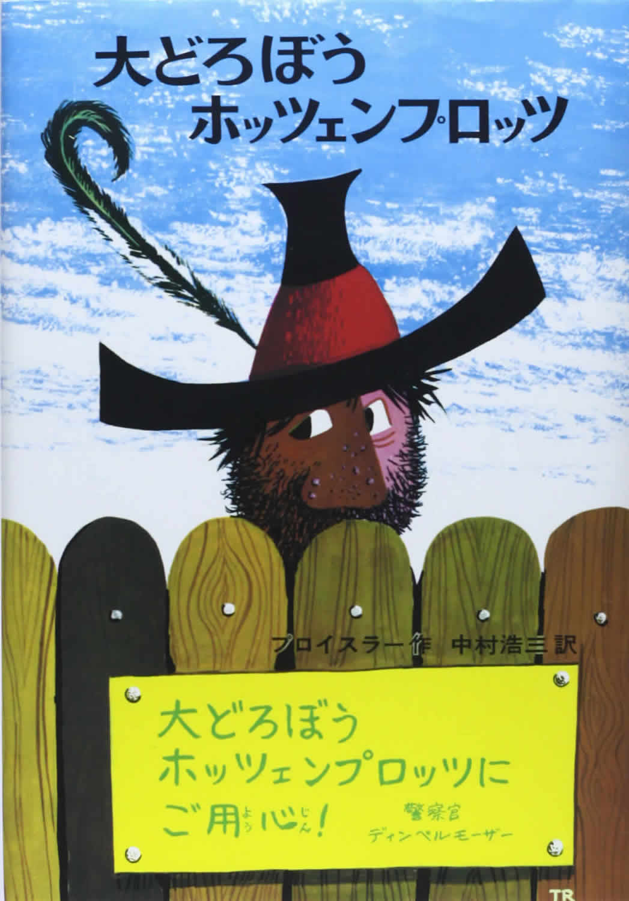
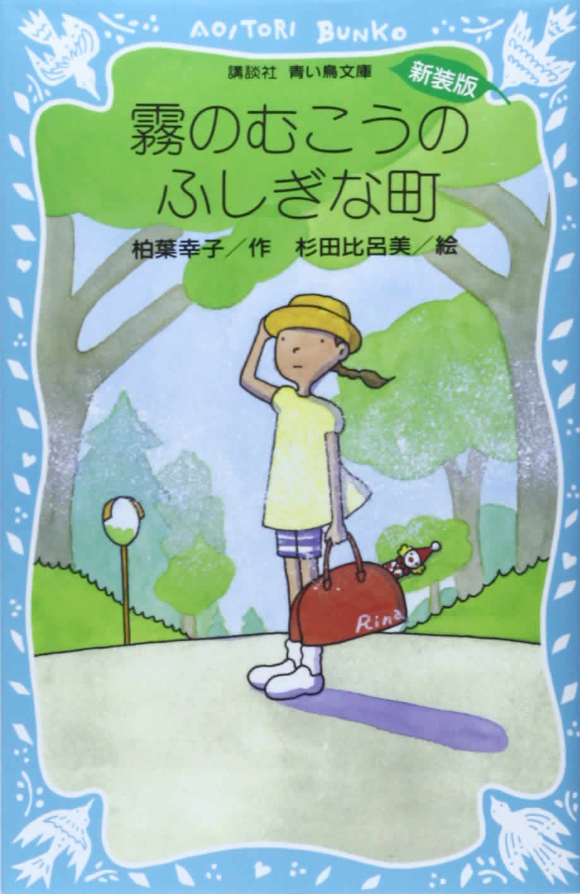
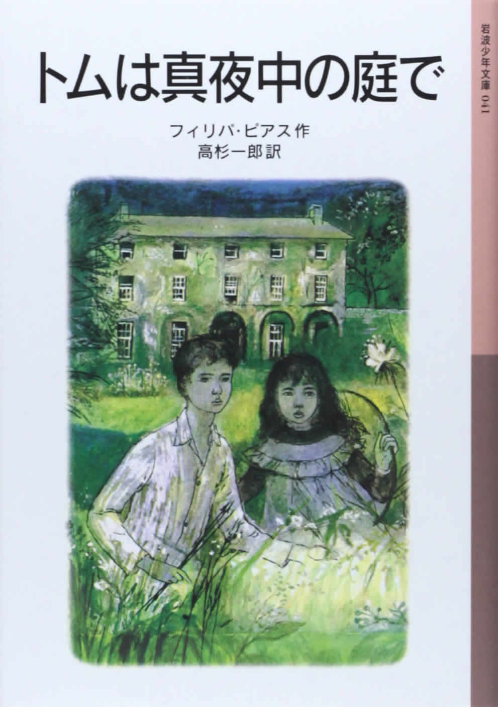
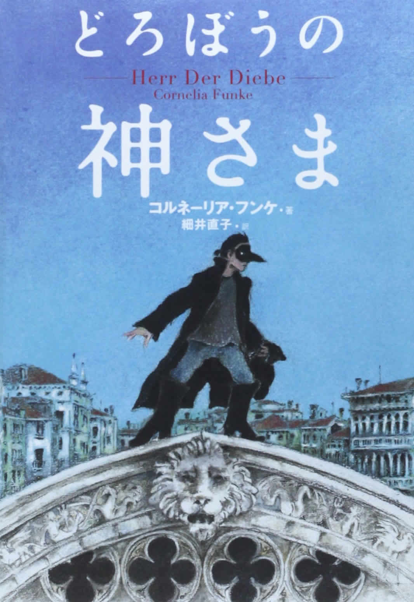

| オールタイムベスト児童文学100 | |
| Amazon.co.jp | |
| Amazon.co.jp (2014) | |
・作品一覧
・著者一覧
※iPhone、iPod Touch、iPad用のKindleアプリからは、アプリ内にあるAmazon.co.jpサイトへのリンクをご利用いただけません。
「この操作は現在対応していません。」というメッセージが表示される旨、ご了承ください。
Amazon.co.jpは2000年11月1日に、日本で書籍のオンライン販売を開始しました。13年にわたる書籍の販売で蓄積した販売データ、カスタマーレビューのデータをはじめとする各種データをもとに、 Amazon.co.jp独自の方法で、これだけは読んでおきたい「オールタイムベストブック」を選定しました。
2013年11月に第1弾として、「小説100」を、2014年3月に第2弾として、「コミック100」を発表し、多くの方にご覧いただき、 Kindle版小冊子もダウンロードいただいています（最後のページに、「オールタイムベスト100」のご紹介をさせていただきました）。
このたび、第3弾として、「児童文学100」
を発表します。
「読み聞かせ」の時期から、自分自身で読書を始める小学生から中学生の皆さんに読んでもらいたい本を、対象年齢別に選出しました。
このKindle版小冊子には、選定された本の内容紹介とAmazon.co.jpのお客様による「参考になったカスタマーレビュー」(2014年5月時点)を掲載しています。
今回も、読書ガイドとしていつも手元に置けるよう、電子書籍という形で刊行しました。対象年齢の方々の本選びの参考に、または大人の方たちにも昔読んだ本との再会などの一助として活用いただければ幸いです。
学校でまだ習っていない漢字や難しい言葉は、Kindleアプリ、Kindle端末の「辞書機能」をぜひご活用ください。
2014年6月吉日
Amazon .co.jp
金原瑞人(法政大学社会学部教授 翻訳家 児童文学研究家)
「オールタイムベスト児童文学100」は、従来の児童書ガイドとは一線を画すラインナップになっています。『アンネの日記』、『ゲド戦記』など定番の翻訳書と、子ども向けでもない日本の現代作品が一緒に並んでいる点がおもしろい。特に中学生向けに顕著ですね。畠中恵、海堂尊らが入っているのは新鮮だし、個人的に大好きなデイヴィッド・ヒルの『僕らの事情』がランクインしたのも嬉しい驚きでした。
一方、小学校低学年向けはロングセラーの翻訳書が多い。実際、小学生の頃は翻訳ものを結構読んでいた子が、中学、高校と上がるにつれて翻訳離れする傾向が、ここ20年ほどで加速しているように思います。
原因のひとつには、私たちが中高生の頃と比較して、現代の日本文学が格段におもしろくなったことが挙げられます（文学的評価は別にして）。ひと昔前は大衆小説と呼ばれる作品でさえ、教養主義的な色あいや匂いがありました。大江健三郎は結構しんどかったけど（笑）、村上春樹の作品は普通の人が普通に読んで理解でき、しかもおもしろい。さらに毎年のようにノーベル文学賞候補にも挙がる。文学や本そのものがリーダブルになってきて、読者側に寄り添ってきた気がします。
文学や音楽、映画など日本発のコンテンツが世界レベルになり、国内で自給自足できる現在、若者たちの目が海外に向かず、登場人物の名前さえ覚えづらい翻訳書はやや肩身が狭いのかもしれません。児童書の分野ではさまざまな国の作品が垣根なく読まれていることを今回知って、とても嬉しく思います。
古典の新訳が最近ブームですが、特に子どもたちには新訳をおすすめします。「自分が慣れ親しんだ版を我が子に」という親心はよくわかるのですが、やはり現代的な翻訳で読ませてほしい。アニメやコミック調の表紙も賛否両論あるのですが、子どもが興味を持って手に取ることがまず大事。大人が子どもに与えたいものと、子どもが欲しいものには、いつの時代だって必ず乖離があるのです。
海外でも「オールタイムベスト」的な試みはなされています。たとえば、欧州の大手書店ウォーターストーンが調査した「20世紀に出版された本ベスト100」、英国の公共放送BBCが約14万人から回答を得た「The Big Read」などがあります。両方とも調査対象は成人ですが、第１位はトールキンの『指輪物語』。
日本の大人たちもこの「オールタイム児童書ベスト100」から未読の作品を探して読んだり、子どもの頃の愛読書を読み返してみたら、絶対におもしろい発見があると思いますよ。
金原瑞人（かねはらみずひと）
金原瑞人
1954年岡山市生まれ。法政大学教授・翻訳家。児童書やヤングアダルトむけの作品のほか、一般書、ノンフィクションなど、翻訳書は400点以上。訳書に『豚の死なない日』『青空のむこう』『国のない男』『不思議を売る男』『バーティミアス』『パーシー・ジャクソンとオリンポスの神々』『ジョン万次郎 海を渡ったサムライ魂』『さよならを待つふたりのために』など。エッセイに『翻訳家じゃなくてカレー屋になるはずだった』『翻訳のさじかげん』など。日本の古典の翻案に『雨月物語』『仮名手本忠臣蔵』『怪談牡丹灯籠』。
（写真撮影：根津千尋）
・選出にあたって、「小説100」に選ばれたものは、今回「児童文学100」からは外しています。「小説100」もぜひ合わせてご覧ください（最後のページに、「オールタイムベスト100」のご紹介をさせていただきました）。
・カスタマーレビューの数、平均カスタマーレビューの星の数、「参考になったカスタマーレビュー」の選定は、2014年5月時点のものです。
・「参考になったカスタマーレビュー」の日付は、そのカスタマーレビューが書かれた日付です。また、サイトに掲載された原文を抜粋しています。
・文庫版、単行本など異なる判型で出版された書籍の場合は、両方のデータを合算して選定しています。
・本書に記載している出版年月日は、2014年5月時点で販売・流通している判型の日付です。その本が初めて出版された日付ではありません。
・
のアイコンをタップすると、その書籍のAmazon.co.jp商品詳細ページへとびます。
・
のアイコンをクリックすると、その書籍のAmazon.co.jpセット商品の一覧へとびます。
※紹介している本と、セット商品の判型・翻訳者などが異なる場合があります。
・
のアイコンをタップすると、その書籍のAmazon.co.jpシリーズ一覧ページ発行年月日順）へとびます。
※iPhone、 iPod Touch、 iPad用のKindleアプリからは、アプリ内にあるAmazon.co.jpサイトへのリンクはご利用いただけません。「この操作は現在対応していません。」というメッセージが表示される旨、ご了承ください。
画像をダブルタップで拡大
あおい目のこねこ
エゴン・マチーセン Egon Mathiesen(著)
せた ていじ (翻訳)
福音館書店 1965/4/1

 (8)
(8)
青い目をしたこねこは、ねずみのくにをさがすために冒険に出ました。ねずみのくにを見つければ、もうエサに困ることがないからです。こねこが出かけた先々で出会うさまざまなできごとを、簡潔で、テンポの早い語り口で、ユーモラスに物語ります。幼児のためのお話として、時代を越えて愛される、古典の地位を獲得した作品。
カスタマー
2001/05/23
わたしの「あおい目のこねこ」
子どもの時に好きだった「あおい目のこねこ」をなくしたので、大人になって懐かしい表紙に出会ってもう一度手に入れました。犬の背中にしがみつくこねこのシーンが、なぜ子どもの頃に強く印象に残ったのか、大人になった今では不思議。どこかに置いてきたかもしれない子どもの心を思い出させる、私にとって、そんな本です。
画像をダブルタップで拡大
いやいやえん
中川 李枝子(なかがわ りえこ)
福音館書店 1962/12/25
(51)
元気な主人公しげるが通う、「ちゅーりっぷほいくえん」のお話。新しく保育園に来たのは、本物のこぐまだった「やまのこぐちゃん」、しげるとちこちゃんが、保育園で机の上にのる「ちこちゃん」など7編を収録。1962年に出版されて以来、多くの子どもたちを夢中にさせた人気の童話。日本の幼年童話に新時代を開いた作品です。
けろろん
2002/09/10
子どもはちょっとブラックが好き
友人に『いやいやえん』を買ってねと言われたほど、子ども心に強烈な印象を残す本のようで、娘もすぐはまりました。結構ブラックでドライな感じが確かにおもしろく、どの話もちょっぴり怖くて冒険があります。保育園という日常に隠れる怖さをすくってファンタジーを加えているので、娘も自分に重ねてドキドキできるのかな。
画像をダブルタップで拡大
エルマーのぼうけん
ルース・スタイルス・ガネット Ruth Stiles Gannett(著)
わたなべ しげお (翻訳)
福音館書店 1963/7/15
(53)
9歳の男の子エルマーは、親しくなった野良ネコから、「どうぶつ島」で野蛮な動物たち捕えられている、かわいそうなりゅうの子の話を聞いて助けにいくことにしました。「どうぶつ島」についたエルマーは、トラやサイやライオンなどどうもうな動物たちにつかまりそうになりますが、そのたびに機転を利かせて危機を切り抜けます。
オハラ翔子
2006/07/27
大好きな本！
これほど霊感を与えられた本はありません。子どもの頃、毎晩この本を抱いて寝て、バックパックを背負ってエルマーみたいに出かけるところを想像しました。ライオンのタテガミを三つ編みにしてカラフルな輪ゴムで結んであげたくてうずうずしました。翻訳も素晴らしく日本語として最高です。親子で感動を分け合ってほしいです。
画像をダブルタップで拡大
かいけつゾロリシリーズ (1) かいけつゾロリのドラゴンたいじ
原 ゆたか(はら ゆたか)
ポプラ社 1987/11/1
(3)
月のひかりにてらされて、すすきがはらは、ゆきのようにかがやいています。そのなかを、ひとつのくろいかげ...。そうです。いじめの旅に出た、あのゾロリです。ひとり修業の旅に出たゾロリは、あるとき、お姫さまの花むこに、立候補することにしました。そのために、すばらしい計画をたてます。ゾロリシリーズの第1作目。
qfg02041
2002/11/14
主人公の性格は最低。しかし子どものウケは最高。
読み聞かせる家内の声を聞いていて、自分勝手でイヤな奴が主人公だと思ったが子どもたちにはオオウケ。人間皆が持っている矮小さや弱さを堂々体現して恥じることのない主人公に、すがすがしい共感を覚えるらしい。私の世代ではこういう非英雄的な生き方は物語の主人公的に恥ずべきことだった。イマドキの子どもはあなどれない。
画像をダブルタップで拡大
くまの子ウーフ
神沢 利子(かんざわ としこ)
ポプラ社 2001/9/1
(15)
遊ぶことが大すき。食べることが大すき。そして、考えることが大好きな、くまの子ウーフ。今日もウーフの、「どうして？」がきこえてきます。くまの子ウーフが発見した9つの疑問、空想的で、突飛で、なかなかの難問。愛らしく笑いをさそう傑作。他に「ウーフはなんにもなれないか？」「ゆでたまごまーだ」など3編を収録。
ルクレツィアの娘
2010/10/25
6歳になったら突然に
4歳頃から読みきかせをしましたが、ピンと来ないようでした。ところが6歳になると、いきなり大好きになって「3番目の話がいい」「今日は卵のお話」と指定してきます。口出ししなくても「ウーフはウーフでできている」というくだりの意味を子どもなりに感じ取っているようです。年齢にあった本があるのだなぁと思いました。
画像をダブルタップで拡大
ぐらぐらの歯 (きかんぼのちいちゃいいもうと その1)
ドロシー・エドワーズ Dorothy Edwards(著)
渡辺 茂男 (翻訳)
福音館書店 2005/11/25
(5)
「ずっとまえ、わたしが小さかったとき、わたしよりもっと小さいいもうとがいました。」こんな風に、どのエピソードも始まります。おねえさんの目から見た、おてんばでお茶目な幼い妹のユーモラスで愛情のこもった10編のお話。妹は、きかんぼで、わがままで、やんちゃなおちびさんです。でも、なぜかみんなから愛されています。
bee
2006/05/30
幼子の生活を振り返る喜び
きかんぼでちいちゃい妹が引き起こす小さな出来事を、まるで自分の娘の幼い頃をなぞるような楽しみがありました。洋服を着る時に足をぴんとつっぱって、抵抗してみたりするところなど、はきはき話すようになった子どもを持つ親には、なんとも懐かしく微笑ましいです。子をもつ親も、もうちいちゃくない子どもも、一緒に楽しめます。
画像をダブルタップで拡大
ちいさいモモちゃん (モモちゃんとアカネちゃんの本 1)
松谷 みよ子(まつたに みよこ)
講談社 1974/6/27
(21)
元気でかわいくておしゃまなモモちゃんには、子ねこのプーやコウちゃんという友だちがいます。働くお母さんなので、モモちゃんは「あかちゃんのうち」で大きくなっていきます。誕生から3歳になるまでのモモちゃんの日常生活を描いた成長童話。1964年に発売されて6巻で完結するまで、30年にわたり書き継がれた名作シリーズ。
さくらさくら
2002/11/04
日本児童文学の古典
やわらかい語り口でありながら、モモちゃんという一人の女の子の経験する日常が見事に描かれている。そういえば本当に小さな子どもにとっては「なんということのない日常」なんて存在しないんだ。何もかもが冒険だったんだと、はっとさせられるのは筆者の観察眼の鋭さ故だろう。ユーモアと愛情がたっぷりと注ぎ込まれた一冊。
画像をダブルタップで拡大
はれときどきぶた
矢玉 四郎(やだま しろう)
岩崎書店 1980/9/5
(17)
毎日日記をつけている則安君は、お母さんに盗み読みされてしまいます。則安君はお母さんをおどろかそうと、でたらめなことを日記に書くことに。「お母さんがえんぴつをてんぷらに」 「金魚がへやをとびまわる」。ところが、書いたことがすべて現実に。「ぶたがふりました」と日記に書いたらそれも本当になってしまうのです。
カスタマー
2003/12/21
小3息子がはまりました。
お母さんが日記を盗み読みしたのに怒ってデタラメを書いたら、あらま。日記に書いたことが、どんどん本当になっていく。大人から見れば、そんなぁというような内容ですが、なぜか楽しい本です。小3の息子も本を読むのが好きなほうではなかったのですが、「はれときどきぶた」は一気に読み、シリーズ全巻読みたいそうです。

画像をダブルタップで拡大
番ねずみのヤカちゃん
リチャード・ウィルバー Richard Wilbur(著)
松岡 享子 (翻訳)
福音館書店 1992/5/31
(15)
ある家にすむおかあさんねずみと4ひきの子ねずみたちは、人に気づかれないように、音をたてずに静かに暮らしていました。ところが、末の子ねずみは、「やかましやのヤカちゃん」と呼ばれるほど、声が大きいのです。おかあさんねずみの注意に対しても、全部大きな声で答えるヤカちゃん。きっと大変なことがおこるでしょう！
ねんねこ
2004/05/28
小学生低学年の子が自力でよむのに最適！初めての本に！
幼い頃から寝る前によみきかせをしていて、小学生になっても読んでもらったほうがいいと一人で読まなかった長男。困ったと思ったころに紹介された本です。物語入門として誰にすすめても「面白くて読みやすい！」のベスト1。声に出して読むと面白さ倍増。子どもは、つかまらないかとどきどきしてくりかえしを面白がります。
画像をダブルタップで拡大
もりのへなそうる
わたなべ しげお
福音館書店 1971/12/1
(18)
てつたくん、みつやくんの兄弟は、自分たちで書いた地図を持って探検に出かけました。すると、森の中で大きなたまごを見つけます。次の日、ふたりが出会ったのは、食いしん坊で臆病、でもとてもやさしいへんな怪獣の「へなそうる」。ふたりはすぐに仲良くなって時のたつのも忘れて遊びます。楽しいさし絵がいっぱいの一冊。
たんたん
2005/07/01
大爆笑
初めは図書館で借りて、子どもと一緒に読みました。あまりにも気に入ったので、早速買いました。へなそうるの声色で読んであげると、大喜びです。よく、「森のへなそうるごっこ」をして、兄弟で遊んでいますよ。森へ行く時に、おかあさんが作ってくれるお弁当がかわいいの！ 字の読める子なら、保育園児でも楽しく読めますよ！
画像をダブルタップで拡大
赤毛のアン
ルーシー・モート・モンゴメリ Lucy Maud Montgomery(著)
村岡 花子 (翻訳)
講談社 2008/7/31
(1)

りんごの白い花が満開の、美しいプリンスエドワード島にやってきた、赤毛の孤児の女の子。夢見がちでおしゃべり、愛情たっぷりのアンが、大まじめで巻きおこすおかしな騒動でだれもが幸せに。おばあちゃんもお母さんも読んだ、村岡花子の名訳がよみがえりました。世界中で愛されているアンと、「腹心の友」になりませんか。
kivakiva "kiva"
2010/08/09
評判通り！
小学3年生の娘に、「赤毛のアン」をと思い購入しました。購入前に、こちらのレビューを拝見しましたら、好評価が多く、購入の決め手となりました。実際、娘もすんなり読めたようで、私も読んでみると、アンの情景がスムーズに入ってきたので、私もお勧めの1冊です。
画像をダブルタップで拡大
あしながおじさん
ジーン・ウェブスター Jean Webster(著)
坪井 郁美 (翻訳)
福音館書店 2004/6/15
(7)
長い間、多くの読者に愛されてきた名作の決定版。名も知らぬお金持ちの援助で大学に入った孤児の主人公ジュディーは、その人物を「あしながおじさん」と名づけて、日々の様子を手紙に書いて知らせていきます。逆境にめげず、常に前向きなジュディーの快活なユーモア、純真な心は、永遠に読者の心の中で生き続けるでしょう。
かるうあ
2008/12/13
あしながおじさんを読むならこの本で
どの「あしながおじさん」を買おうかと迷っていたら、ぜひこの本がおすすめです。忠実な訳と原作のままの挿絵です。この挿絵が、ユーモアたっぷりなのでおすすめします。子どもに読ませようと、他の本を買ったところ、挿絵が原作と違うことを知りとても残念で買いなおしました。挿絵も大切なので、ぜひチェックしてください。
画像をダブルタップで拡大
エーミールと探偵たち
エーリヒ・ケストナー Erich Kästner(著)
池田 香代子 (翻訳)
岩波書店 2000/6/16
(6)
エーミールはベルリンのおばあちゃんをたずねる途中の列車のなかで、大切なお金をぬすまれてしまいます。怪しい山高帽の男を追跡するエーミールは、ベルリンっ子の少年たちの協力で、悪漢を追いつめます。ベルリンの街を舞台に、少年たちが知恵をしぼってみんなで協力し、犯人をつかまえる大騒動がくりひろげられます。
she-ep
2002/06/26
エーミールに会いに行こう！
若き詩人であったケストナーが、子どもたちのために書いたお話。都会への旅がたちまち冒険に変わるスリル、子どもたちの力だけで事件に立ち向かう爽快さ、お父さんのいないエーミールの毅然とした態度、エーミールとお母さんの美しい愛情。すべてが愛される物語の条件を備えています。とくに事件解決の場面は、興奮間違いなし！
画像をダブルタップで拡大
大きな森の小さな家 (インガルス一家の物語 1)
ローラ・インガルス・ワイルダー Laura Ingalls Wilder(著)
恩地 三保子 (翻訳)
福音館書店 2002/6/20
(14)
百年前の北米の森と草原を舞台に、少女ローラとその一家の開拓生活を描いた大河物語。ウィスコンシン州の「大きな森」の丸太小屋に住む、ローラと両親、姉のメアリイ、妹のキャリー。冬がくるまえの食料作りから、ローラ5歳から6歳までの1年間の森での生活が、好奇心いっぱいのローラの目を通して生き生きと語られます。
さつん
2004/11/06
小学生の女の子のクリスマスプレゼントに最適☆
小学生のときに友達に借りて夢中になった本です。森の中に住む家族の質素ながらも豊かな日常生活に心奪われたことを昨日のことのように思い出します。「普通の家族の普通の生活」になぜ心奪われるのか、謎は解けませんが、何度読み返してもおもしろい本です。読み終わると「家族を大切にしよう」という気持ちが強まります。

画像をダブルタップで拡大
大どろぼうホッツェンプロッツ
オトフリート・プロイスラー Otfried Preußler(著)
中村 浩三 (翻訳)
偕成社 1990/5/1
(32)
おばあさんの大切なコーヒーひきが、稀代の大どろぼうホッツェンプロッツに盗まれてしまいました。コーヒーひきを取り戻すべく、カスパールと親友ゼッペルはホッツェンプロッツの隠れ家を探します。大魔法使いツワッケルマンや妖精も登場して、2人の少年の大活躍がはじまります。スリルとユーモアがいっぱいつまった傑作。
かなかな
2001/04/20
ドイツ民話とユーモラスな少年冒険劇のマッチング
少年カスパールと親友ゼッペルが悪名高い大泥棒ホッツェンプロッツを相手に、おばあさんのコーヒー挽きを取り返すために、少年らしい勇気と知恵で活躍するお話。 全編に流れるドイツ独特の魔術を含んだ空気が心地よく、軽快なテンポ、そして憎みきれないユーモラスな悪漢たちの個性が読者を本の世界にぐいぐい引き込みます。
画像をダブルタップで拡大
オズの魔法使い
ライマン・フランク・ボーム Lyman Frank Baum(著)
幾島 幸子 (翻訳)
岩波書店 2003/8/19
(5)
大竜巻に家ごと空高く吹き上げられた少女ドロシーは、愛犬トトとともに、オズの大王のすむ不思議な魔法の国へ着陸しました。かかし、ブリキの木こり、おくびょうなライオンが仲間に加わって、一行はエメラルドの都をめざした冒険がはじまります。アメリカファンタジーの古典的な作品。
紺碧の飛行人
2007/01/24
テンポ良く楽しめた。
ドロシー、ライオン、カカシ、ブリキのきこり、オズなどの魅力的な登場人物、鮮やかな背景設定（エメラルドの都、灰色の草原）などには、象徴的な意味が感じられたので、それを自然と感じられる大人が読んでも十分に楽しめる作品ではないでしょうか。さらにデンズロウの挿絵もモノクロながら、素晴らしいものだと思います。
画像をダブルタップで拡大
風にのってきたメアリー・ポピンズ
パメラ・トラバース Pamela Lyndon Travers(著)
林 容吉 (翻訳)
岩波書店 2000/7/18
(13)
東風の吹く日に、こうもり傘につかまって、空からやってきたメアリー・ポピンズ。バンクス家で子どもたちの世話をするためにやってきた彼女は、ちょっと風変わり。メアリー・ポピンズが語るお話は、子どもたちをふしぎな冒険の世界へと導くのです。笑いのかげに人生の深みをのぞかせる、ユーモアあふれる空想物語の代表作。全4作。
のりぞう
2008/11/04
誰にも媚びない憧れの女性
彼女は他人に媚びることはない。けれど彼女が選んだ「とき」に、見せてやってもいいと選んだ人に、彼女が折にふれ見せてくれる、不思議を垣間見せてくれる。そういった言動が、バンクス家の子どもたちに抱いている彼女の親愛の情を、私たちに伝えてくれているから、私はメアリー・ポピンズに何度でも会いたくなるのだと思う。

画像をダブルタップで拡大
霧のむこうのふしぎな町
柏葉 幸子(かしわば さちこ)
講談社 2004/12/16
(57)
6年生の夏休み、リナは水玉模様の傘を追いかけて不思議な町へやってきた。霧の谷の森を抜け霧が晴れた後、赤やクリーム色の洋館が建ち並ぶ、きれいでどこか風変わりな町が現れた。リナとめちゃくちゃ通りに住んでいるへんてこりんな人々との交流がみずみずしく描かれる。『千と千尋の神隠し』に影響を与えたファンタジー。
カスタマー
2001/08/23
夏休みにぴったりのふしぎな旅
田舎町から山道を登るうちに霧の中に急に洋館が現れる。そこが霧の町。リナが夏休みを過ごすこの町では魔法めいた出来事が続く。リナはちょっとふくよかで怒りっぽいポニーテールの小学生。優等生でも夢見る少女でもない、読み手に限りなく近い存在。生きるか死ぬかの大冒険はないけど、小学生の夏休みの経験としては最高。
画像をダブルタップで拡大
くちぶえ番長
重松 清(しげまつ きよし)
新潮社 2007/6/28
(36)
小4のツヨシのクラスに一輪車とくちぶえの上手な女の子、マコトがやってきた。転校早々「わたし、この学校の番長になる！」と宣言したマコト。小さい頃にお父さんを亡くしたマコトは、誰よりも強く優しく、友だち思いで頼りになるやつだった。サイコーの相棒になったマコトとツヨシ。1年間の決して忘れられない友情物語。
アガタ
2007/09/15
あの頃を思い出しました
大人になった「ぼく」が、小学校4年生の1年間だけ一緒に過ごした親友との思い出を綴る。これ、実話なのかな？ だったらすごくいいな。忘れてしまっている何かを、思い出させてくれる1冊です。重松さんて、本当に不思議な人だと思いますね。同世代なのに、なんでこんなに子どもの頃の気持ちを、覚えているんだろう。
画像をダブルタップで拡大
くまのパディントン (パディントンの本 1)
マイケル・ボンド Michael Bond(著)
松岡 享子 (翻訳)
福音館書店 2002/6/20
(11)
南米のペルーからロンドンにやってきた子グマは、パディントン駅でブラウン夫婦に見つけられました。パディントンと名付けられ、ブラウンさん一家と暮らして、縦横無尽に活躍します。ママレードが大好きで、いつも困った事件にまきこまれるけれど、いつも運よく逃れてしまうパディントンは、たちまち街の人気者になります。
uff-chika
2003/05/01
大人も楽しめます
パディントンを家族として迎え入れたブラウン家の人々、行く先々で楽しい（大変な？）騒ぎを起こすパディントンとそれに関わる人々のユーモアたっぷりで、思いやりのある会話に、「こういう言葉の表現ってステキだな」と感心することばかり。お母様が読めば、小さなお子さんのいたずらや失敗を温かく導くことができるかも。
画像をダブルタップで拡大
クマのプーさん
アラン・アレクサンダー・ミルン Alan Alexander Milne(著)
石井 桃子 (翻訳)
岩波書店 2000/6/16
(17)
イギリスの劇作家A.A.ミルンが、幼い息子クリストファー・ロビンのために書いた、世界一有名なクマのプーさんが活躍する楽しいファンタジー。家族で休暇を過ごした田舎の美しい森を舞台に、幼いクリストファー・ロビンが、クマのプーさんやコブタなど、子ども部屋の大好きなぬいぐるみたちと、ゆかいな冒険をくりひろげます。
ぷっこ
2008/09/09
やわらかい日本語
石井桃子さんのやわらかくきれいで、今は消えそうになっている日本語を、子どもたちにそのまま伝えて残すのは大切なことだと思います。今、言葉の意味まではわからなくても、少し大人になってから、「ああ、こんなこと言ってたのか、プーさんは」と思えれば、それもいいと思います。何度読み返しても楽しい本なのですから。
画像をダブルタップで拡大
黒魔女さんが通る!! チョコ、デビューするの巻
石崎 洋司(いしざき ひろし)
講談社 2008/11/26
(2)
魔法マニアのチョコは、まちがって呼びだした黒魔女、ギュービッドの指導（しごき？）のもと、ただいま黒魔女修行中！おしゃれでおばかな自己チュウのメグや、学級委員の一路舞ちゃん、天然の百合ちゃん、松岡先生、エロエースたちがひきおこす大騒動を、魔法で解決（拡大？）しちゃいます。マジカルコメディー「黒魔女さん」シリーズ。
ラッカー好き
2005/11/29
おもしろすぎ！
チョコもいいけど、出てくるキャラクターがみんなトンデます。エロエースとか悪キャラが活きてます！魔法使いモノってけっこう陰気あるいはお行儀の良いものが多い気がするけど、これはけっこうブラックな知識も得られるし、キュートでかわいいだけじゃない登場人物たちといい、一筋縄ではいかない感じです。
画像をダブルタップで拡大
だれも知らない小さな国 (コロボックル物語 1)
佐藤 さとる(さとう さとる)
講談社 1980/11/10
(18)
びっくりするほど綺麗なつばきが咲き、美しい泉が湧き出る「ぼくの小山」は、コロボックルと呼ばれる小人の伝説がある山だった。ある日、小川を流れる靴の中で、小指ほどしかない小さな人たちが、僕に向かって手を振った。そのことは自分だけの秘密にして、彼らに魅せられた僕は、彼らと再会することを夢見て大人になった。
kashiro
2002/09/18
あの頃を思い出して
小学生の頃、夢中になって読みました。せいたかさんのような心を持つ人が、今の世の中に何人いるかを考えて悲しくなりました。小さい頃にあった空き地や基地が作れるような場所には、コロボックルが住む不思議な世界があったかもしれないと思うだけで悲しくなります。もう一度あの頃に戻りたい、懐かしさでいっぱいの物語。

画像をダブルタップで拡大
ダレン・シャン (1)
ダレン・シャン Darren Shan(著)
橋本 恵 (翻訳)
小学館 2006/7/15
(24)
ふとしたことから手に入れた『奇怪なサーカス』のチケット。ダレンと親友のスティーブが見にいくと、スティーブが毒グモに噛まれてしまう。親友の命を救うために半バンパイアになってしまうダレン。数奇な運命をたどっていくダレンの冒険や不思議な世界が、予想もできぬ展開で繰りひろげられていく、英国のミステリー小説。
LUNA
2007/04/07
ファンタジーの常識を打ち破る・スゴい作品!!
友だちのためにヴァンパイアハーフになった少年の、過酷な宿命の物語。はっきりいって、...スゴいです。すべてのセリフ・シーンに深い意味があり、無数の伏線が絡み合って、ラストへ向かって行く様は、圧巻としか言いようがありません。普通のファンタジーのようにただ「善」が勝つわけでなく、良い意味で安心して見ていられません。
画像をダブルタップで拡大
小さなスプーンおばさん
アルフ・プリョイセン Alf Prøysen(著)
大塚 勇三 (翻訳)
学習研究社 1966/4/1
(10)
ある朝目がさめたら、突然ティースプーンくらいに小さくなってしまったおばさん。ところが、気丈なおばさんはちっとも動じません。「おやまあ、なんてこった！」とぶつぶつつぶやきながら、てきぱきと困難をきり抜けていきます。気のやさしいご亭主との静かな暮らしのなかでおこる珍事件を、明るくユーモラスに描いた物語。全3作。
カスタマー
2002/11/19
スプーンおばさん、おひさしぶり！
子どもの頃、わくわくしながら何回も読みました。あの頃は「しょうがビスケット」が不思議でたまりませんでした。楽しそうな夏至の祭り、コケモモの実やパンケーキがおいしそうなこと、夜の闇が怖いことなど忘れられません。本を読まなかった子どもが目をきらきらさせながら読み始めました。改めて続編を注文しようと思います。
画像をダブルタップで拡大
小さなトロールと大きな洪水
トーベ・マリカ・ヤンソン Tove Marika Jansson(著)
冨原 眞弓 (翻訳)
講談社 1999/2/15
(10)
暗くて寒い森の中。パパはいないけどもう待っていられない。冬がくるまえに家をたてなければ。ムーミントロールとママは、おそろしい森や沼をぬけ、あれくるう海をわたってお日さまの光にあふれるあたたかい場所をめざします。第2次世界大戦直後に出版され、再版が待ち望まれていたムーミン童話シリーズ記念すべき第一作。
続明
2004/03/31
これが原初のムーミントロールです。
作者がムーミンシリーズを世に出すことを考えずに書いた、「ムーミンを主人公とした短編」であり、真の意味で、原初のムーミン作品です。ムーミン世界ならではの描写で、起承転結がシンプルに短編の中で結ばれているため、他の同シリーズ作品が、自分の肌に合うのかどうか、お試し感覚で読んでみるのもいいかもしれません。

画像をダブルタップで拡大
チョコレート戦争
大石 真(おおいし まこと)
理論社 1999/2/1
(16)
おとなはなんでぼくたちのいうことを信じないの? 光一と明が、町一番のケーキ屋さんのショーウィンドーに飾ってあるチョコレートの城をのぞいていると、目の前のガラスが急に割れて、お店の人に犯人扱いされてしまいます。身におぼえのない罪をきせられたことから、仲間を集めてケーキ屋さんに戦いをいどむことにしました。
caz19
2003/07/20
こんなエクレア食べてみたかった
小学生の頃はケーキやエクレアなんて特別なときに食べるもの。主人公がエクレアをほおばる描写では、当時生唾を飲んだものです。少年たちの濡れ衣を晴らそうと奮起する友情と、エクレールを食べるという裏切り行為の狭間での葛藤。納得いかなくてもなんとなく流されている大人の私には胸がすく思いにさせてくれる作品です。
画像をダブルタップで拡大
デルトラ・クエストI (1) 沈黙の森
エミリー・ロッダ Emily Rodda(著)
岡田 好恵 (翻訳)
岩崎書店 2002/8/19
(24)
ここはデルトラ王国。王家に伝わる秘宝のベルトにはめこまれた7つの宝石の魔力が、国を守っている。その宝石が、影の大王にうばわれた！ 平和をやぶられたデルトラ王国を救うために、少年リーフが1枚の地図をたよりに、冒険の旅に出る。愛と友情と闘いの、息もつかせぬ冒険ファンタジー。
カスタマー
2002/09/28
ハリーポッター好きの方にも！
ハリーポッターが好きな息子のために、買って読み聞かせをしていたら、幼稚園の娘もはまりました。ハリーポッターだと話が長すぎて、集中できない娘ですが、デルトラ・クエストだと話が短いので、集中できたのでしょう。ハリーポッターが好きな方にも、またハリーポッターが長すぎて、挫折してしまった方にもおすすめです。
画像をダブルタップで拡大
ドリトル先生アフリカゆき
ヒュー・ジョン・ロフティング Hugh John Lofting(著)
井伏 鱒二 (翻訳)
岩波書店 2000/6/16
(15)
「沼のほとりのパドルビー」に住む名医ドリトル先生は、オウムのポリネシアから動物語を習い、世界中の動物たちから敬愛されています。ある日アフリカのサルの国から、ひどい疫病が流行しているから救ってほしいという訴えを受けた先生は、犬のジップたちをひきつれて冒険の航海に出発します。ドリトル先生物語の第1作目。
パンパイプ
2006/08/22
子どものうちに、読んでおきたい作品
大人になって読んでみると、作者の当時の世界に対する様々な批評、弱者への温かい視線など、色々気づくこともあるのですが、子どもはごくごく素直に、ユーモアあふれる、温かいドリトル先生の世界観にすっぽり包まれて、とても幸福な気持ちを味わっているようです。子ども時代にこそ味わっておきたい、優れた名作だと思います。
画像をダブルタップで拡大
ナルニア国ものがたり (1) ライオンと魔女
C.S.ルイス C. S. Lewis(著)
瀬田 貞二 (翻訳)
岩波書店 2000/6/16
(78)
戦争をさけて田舎の古い屋敷にやってきた4人のきょうだい。広い屋敷を探検して衣装だんすに入りこみ、毛皮の外套をおしのけて奥へ進むと、そこは雪の降りつもる別世界ナルニア国だった。かつて偉大なライオン、アスランがつくった自由の国。このナルニア国で、子どもたちは正義のライオンとともに悪い魔女の軍と戦います。
moltu
2006/08/13
布団にもぐりこんで読むべき本
映画もおもしろいけど、子どもの頃にこの本を読んで感じた衝動は映画の面白さとは全く異質のもの。最もすごいのは「タンスの中から別世界に行く」という設定にあると思います。これが「布団の中で本を読んでいる自分」とかぶる。世界の外枠（＝布団の中の空間）が広がるような感覚。これは本を読むことでしか味わえない体験です。
画像をダブルタップで拡大
新美南吉童話集―心に残るロングセラー名作10話
新美 南吉(にいみ なんきち)
北川 幸比古 / 鬼塚 りつ子 (編集)
世界文化社 2004/2/1
(5)
わずか29歳、2冊の童話を出版しただけでこの世を去った新美南吉。底抜けに明るく、ユーモアと正義感にあふれた彼の童話の中から、子どもたちにぜひ読んでほしいた「ごんぎつね」「おじいさんのランプ」「手ぶくろを買いに」「でんでんむしの悲しみ」など計10話を収録。小学校4年までに習う漢字を基本的に使用し、すべて振り仮名つき。
なお
2009/06/17
選者 北川幸比古の確かな目で選ばれた作品集です
この作品集は、子どもへの愛情を持つ親ならば必ず納得して読める、北川幸比古の暖かい、人間愛と自然への愛情を感じさせる編集です。生死観に対しても、変に、宗教がからない、「あるものを受け入れる」、という新美南吉の生死観をそのまま伝えてあり、北川幸比古の新美南吉の研究の奥の深さを感じられるおすすめの1冊。
画像をダブルタップで拡大
ピーター・パンとウェンディ
サー・ジェームス・マシュー・バリー Sir James Matthew Barrie(著)
石井 桃子 (翻訳)
福音館書店 2003/6/20
(5)
ある夜、いつも夢の中にあらわれるピーター・パンに誘われて、ウェンディたちは、「ネヴァーランド」へと飛び立ちます。妖精、海賊、人食いワニ、それに人魚たちが待ち受ける世界です。大人にならない少年ピーターと一緒に、わくわくする冒険へ。陽気で、むじゃきで、きままな者たちだけに許される、至福の時の始まりです。
石山奈々絵
2004/09/28
私のもっとも好きな本の中の一冊です！
初めて読んだのは中学生のとき。ロンドンで大人向けに作られた戯曲で舞台で空飛ぶシーンに人々は度肝を抜かれ、それから百年、様々な媒体でベストセラーとなって語り継がれているのです。原作を読まないとそのよさ、楽しさ、はかなさは分かりません。戯曲の原作者本人が小説化したのが「ピーター・パンとウェンディ」です。
画像をダブルタップで拡大
百まいのドレス
エレナ・エスティス Eleanor Estes(著)
石井 桃子 (翻訳)
岩波書店 2006/11/10
(8)
いつも同じ服のワンダが「ドレスを100まい持ってる」と言っても誰も信じません。人気者のペギーが先頭に立ち、みんなでワンダをからかいます。ペギーの親友マデラインはよくないことだと感じながらだまって見ていました。どんなところでも、どんな人にも起こりうる差別の問題を、難しい言葉を使わずに描いたアメリカの名作。
七つ風
2006/12/11
たくさんの人に読んでもらいたい秀作
「いじめている」と明確に認識していない子ども達も少なくないのではないかと思います。いじめているとは思わずにいじめている、差別していると気づかずに差別をしている、ということに気づかされる秀作。重いテーマですが、希望を残した終わり方をしているので、たくさんの人が読んで考えるきっかけにしてもらいたい本です。
画像をダブルタップで拡大
冒険者たち―ガンバと15ひきの仲間
斎藤 惇夫(さいとう あつお)
岩波書店 2000/6/16
(32)
イタチと戦う島ネズミを助けに、ドブネズミのガンバと個性豊かな15ひきの仲間たちは、舟で夢見が島へ渡りました。しかし、白毛のノロイがひきいる、どうもうなイタチの群れの攻撃を受けて、ガンバたちは追いつめられてしまいます。海岸の岩山で、ガンバたちは知恵と力の限りをつくして、最後の決戦の時をむかえます。全3作。
kazei
2004/07/05
私の永遠の冒険記
美しく幻想的な島を背景としたガンバと他のネズミ達の冒険、死闘、生き様、別れ。もう夢中になって何度も繰り返し繰り返し。持っていた単行本はボロボロ。出てきた歌は暗記して勝手にメロディを作って唄う始末。どの旅行にも持って行きました。恋をしていたんだと思います。生涯一の本。私の永遠の本です。永遠の冒険です。
画像をダブルタップで拡大
マジック・ツリーハウス (1) 恐竜の谷の大冒険
メアリー・ポープ・オズボーン Mary Pope Osborne(著)
食野 雅子 (翻訳)
KADOKAWA/メディアファクトリー 2003/11/15
(28)
ペンシルベニア州に住むジャックとアニーの仲良し兄妹。2人は森の大きなカシの木の上に、不思議なツリーハウスを見つける。中で本を見ていると本の中の世界へ入ってしまい、着いたところは恐竜時代。本物の恐竜と仲良くなったり追いかけられたり、ハラハラどきどきの大冒険が始まった。はたして、2人はぶじに帰れるのか。
taketakerururu
2003/08/17
感謝感謝感謝！！！
外で遊びまわっている小3の息子がじーっと机の前で最後まで黙って読み終えた本です。ジャックとアニーが息子と娘と同じ9歳と7歳で同じ兄妹関係という偶然も息子のハートをつかんだようです。恐竜やエジプトやアマゾン、原始人、忍者などの分野に主人公が飛び込んでいくので、息子は「楽しみだなあ」とつぶやいています。
画像をダブルタップで拡大
魔女の宅急便
角野 栄子(かどの えいこ)
福音館書店 2002/6/20
(21)
ひとり立ちするためにはじめての街にやってきた、13歳の魔女キキと相棒の黒猫ジジ。懸命に考えて自立するために始めた仕事は、ほうきで空を飛んで荷物を届ける宅急便屋さん。ミスをしておちこんだりしながらも、元気に生きるキキは、荷物を運びながら大事なことを発見します。町の人たちに受け入れられるまでの1年の物語。
シロフォン
2006/10/18
はたらくこと
ファンタジックな設定の魅力に加え、働くことの本質に触れている作品です。誰かの役に立ちたいと願い、必要とされる幸せを知り、それを自分の大切な人に認めてもらう...という働くことの普遍的な喜びが、魔女のひとり立ちという設定で見事に描かれています。子どもはもちろん、元気が不足している大人にも読んでほしいです。
画像をダブルタップで拡大
窓ぎわのトットちゃん
黒柳 徹子(くろやなぎ てつこ)
講談社 1991/6/15
(58)
「君は、ほんとうは、いい子なんだよ」。小学校を一年生で退学になったトットちゃんに、小林先生はそう言ってくれました。この言葉がトットちゃんの心に大いなる自信を与えたのです。話すことがなくなるまで話を聞いてくれた先生が好きになって、トットちゃんはのびのびと学ぶことができるトモエ学園に通うことにしました。
節約主婦
2009/08/16
私、小学1年生の記憶なんてないな。
小学1年生の記憶がこんなに残ってるなんて感心した。私はなーんにも覚えていない。...いや、思い出さないようにしていただけだ。運動が苦手でいつも休み時間に一人で本を読んでいたこと。思い出すのはそんなことばかり。私も小林先生に会いたかったな。きみはいい子だよって誉めてくれただろうか。トットちゃんが羨ましい。
画像をダブルタップで拡大
みどりのゆび
モーリス・ ドリュオン Maurice Druon(著)
安東 次男 (翻訳)
岩波書店 2002/10/18
(18)
やさしい両親から愛され、何不自由なく裕福に暮らしているチト少年は、ある日、お父さんが兵器を作っている商人だということを知り、ひどく驚きました。チト少年は、自分が不思議な「みどりのゆび」をもっていることに気づきます。そこで、世の中をもっとよくするために、町じゅうにたくさんの花を咲かせることにしました。
カスタマー
2004/02/21
一生の教科書にしたい本
純粋で勇気あるチトの思いと行動に感動しました。「花って災難をおこるのをふせぐんだよ」というチトの発見、「戦争があるとみんな何かをなくす」というムスターシュおじいさんの言葉...どきっとしますが本当にそうだと思います。決して少年向けではない深い内容は、いつ読んでも生きていくのに大切なことを教えてくれます。
画像をダブルタップで拡大
宮沢賢治童話集―心に残るロングセラー名作10話
宮沢 賢治(みやざわ けんじ)
北川 幸比古 / 鬼塚 りつ子 (編集)
世界文化社 2004/2/1
(6)
郷土岩手に基づいた創作を行い、数々の詩や童話を書いた宮沢賢治。その中から子どもたちにぜひ読んでほしい名作、「注文の多い料理店」「どんぐりと山猫」「オツベルと象」「よだかの星」「やまなし」「雪わたり」「セロひきのゴージュ」など計10話を収録。小学校4年までに習う漢字を基本的に使用し、すべて振り仮名つき。
ヨーコママ
2009/06/17
子どもも大好き
我が家にくるサンタさんに、娘が小学2年生の時に、プレゼントされました。「言わずと知れた」宮沢賢治ですが、私も読んだことのなかったお話もありました。子どもも「みやざわけんじさん」となぜか「さん付け」で親しんでいます。娘は、読書感想文に「ツェねずみ」を選んで書いていました。その時の、読み手に何かを感じさせる一冊です。
画像をダブルタップで拡大
ルドルフとイッパイアッテナ
斉藤 洋(さいとう ひろし)
講談社 1987/5/20
(40)
猫と人間、それぞれの愛と友情の物語。岐阜で飼い猫として暮らしていた黒猫のルドルフは、ひょんなことから、長距離トラックで東京にやってきてしまう。そこで出会ったのが、教養のある土地のボス猫であるイッパイアッテナ。その日からとびきり愉快なノラ猫生活がはじまり、ルドルフは岐阜へと帰る方法を探すことになる。
クラウド・コレクター
2005/03/23
ネコから学ぶ哲学
小学生の時は友情の部分だけに感動しましたが、十数年後に読み返すと「教養ある人同士の友情」のすがすがしさに感動しました。学があるだけでなく素直に相手を尊敬したり感謝したり、物事の価値を解った上で中立的な立場にあるなど、人としての道をひっくるめての教養です。まさか人道をネコから学ぶとは思いませんでした。
画像をダブルタップで拡大
IQ探偵ムー そして、彼女はやってきた。 (IQ探偵シリーズ 1)
深沢 美潮(ふかざわ みしお)
ポプラ社 2009/11/1
(5)
春の嵐が吹き荒れたある日。突風とともに小学5年生の元と瑠香のクラスにひとりの少女が転校してきた。彼女の名は夢羽。とびっきりの美少女だけどぶっきらぼうで授業中は堂々と居眠り。なのに、誰もわからない謎を簡単に解いてしまう。謎だらけの夢羽の出現で元と瑠香の毎日も謎めいたものに変わる。いったい夢羽とは何者？
♪フルート♪
2007/01/21
おもしろい！！
クールでかっこいい、美少女のムー。元やムーの周りで起こるたくさんの事件。どんな事件でも、簡単に解いてしまうムーは、すごいなぁと思いながらよみました。読み始めると、時間を忘れて読み進めてしまいます！！
画像をダブルタップで拡大
家なき娘 (上)
エクトール・アンリ・マロ Hector Henri Malot(著)
二宮 フサ (翻訳)
偕成社 2002/2/1
(8)
フランス人を父に、インド人を母に持つ少女ペリーヌ。インドからフランスにたどりついたとき、すでに父は亡く、母もパリで力尽きてしまう。一人ぼっちのペリーヌは父の故郷にむかう。祖父はペリーヌをむかえいれるだろうか。ペリーヌの父は結婚が原因で勘当されていた。聡明な少女が困難をのりこえ、幸せを得るまでの物語。
Amazon Customer
2003/05/13
現代語版・家なき娘
知ってる人は知ってる、アニメ「ペリーヌ物語」の原作。子どもたちにも読みやすく、大人でもまっすぐにその内容に没頭できる、現在の日本語で書かれています。エピソードは小説らしく、アニメとはまた違った楽しさが味わえます。無論すべての伏線をナレーターが解説してもいません。どうぞペリーヌの冒険をお楽しみください。
画像をダブルタップで拡大
兎の眼
灰谷 健次郎(はいたに けんじろう)
角川書店 1998/3/20
(76)
新任教師・小谷先生が受け持ったのは、学校では一言も口をきこうとしない1年生・鉄三。心を開かない鉄三に打ちのめされる小谷先生だが、鉄三の祖父や同僚の足立先生、そして学校の子どもたちとのふれ合いの中で、苦しみながらも鉄三と向き合おうと決意する。次第に小谷先生は隠された鉄三の可能性の豊かさに気付いていく。
にあぁ
2007/02/25
灰谷作品の原点
小学校4年生で本作に触れて以来30年余、何度読み返したかわからないがそのたびに心が洗われる。ほぼ一言一句を覚えており、わかっていても涙がにじんでくる。ここまで良い人ばかりいないし、良い先生、悪い先生があまりにステロタイプな区分になっている点は批判の対象になりえるだろうが30年読み続けていまだ色あせない。
画像をダブルタップで拡大
宇宙への秘密の鍵
スティーヴン・ウィリアム・ホーキング Stephen William Hawking(著)
さくま ゆみこ (翻訳)
岩崎書店 2008/2/9
(22)
ホーキング博士が世界中の子どもたちに贈るスペース・アドベンチャー。物語の力で、科学・宇宙への興味の種をまく画期的な作品。スーパーコンピューター・コスモスの力で宇宙を大冒険する物語と、科学コラムや美しい宇宙写真を読むうちに、星の誕生や太陽系、ブラックホールなど、宇宙に関する知識を自然と身につけられる。
ジョニー平塚
2008/02/09
親子の絆を深めてくれた本
冒険物語を読みながら宇宙理論がすんなりと頭に入ってくる本。小学校5年生の息子に薦めたところ、あっという間に読み終えてしまった。それからは物語や本にちりばめられた宇宙の知識がまとめられたコラムについて、親子の会話が弾んでいる。息子と一緒に宇宙の話ができるなんて、この本を読むまで考えられなかったことだ。
画像をダブルタップで拡大
エラゴン 遺志を継ぐ者 (ドラゴンライダーBOOK1)
クリストファー・パオリーニ Christopher Paolini(著)
大嶌 双恵 (翻訳)
静山社 2011/7/12
(11)
ドラゴンライダーとは超人的な身体に魔力をまとった人々。竜と心を交わし、華麗に乗りこなす誇り高き種族。伝説では彼らは「十三人の裏切り者」によって竜もろとも滅ぼされたという。森で青く輝く不思議な石を手にした少年エラゴンの運命は伝説と繋がり、大きく動きだす。誇り高い雌竜サフィラとエラゴンはいま、目覚める。
Madhatter
2006/12/18
いい感じに爽快な作品
この作品で描かれている主人公とドラゴンの絆・冒険...おもしろいです。でも、私の思うホントにおもしろいところはきっと、「あ～、こんなドラゴンがいて一緒にこんな素敵な冒険ができたらいいなぁ～」って、作者が本当にそんな憧れにどっぷりハマりながら、筆を走らせていたっていうのを読みながら感じられるところかなと思います。
画像をダブルタップで拡大
思い出のマーニー (上)
ジョーン・ロビンソン Joan Robinson(著)
松野 正子 (翻訳)
岩波書店 2003/7/16
(14)
養い親のもとを離れ、転地のため海辺の村の老夫婦にあずけられた少女アンナ。孤独なアンナは、同い年の不思議な少女マーニーと友だちになり、毎日二人で遊びます。ところが、村人はだれもマーニーのことを知らないのでした。ある日、マーニーは、姿を消しました。彼女をさがすうちにアンナは、マーニーの思いがけない秘密を知り...。
ワンワン
2005/07/25
マーニーはアンナのことを知っていたのだろうか？
この手の話は好きで、かなり読んだつもりでしたが、まだこんな素敵なのが残ってたなんて。この物語の魅力は、詩情あふれる風景描写やマーニーのキャラクターもさることながらアンナの心とその変化にあると思います。10代はじめのやりきれなさを体験した人なら、アンナの気持ちや行動に共感を持って読めるでしょう。
画像をダブルタップで拡大
怪人二十面相 (少年探偵シリーズ)
江戸川 乱歩(えどがわ らんぽ)
ポプラ社 2005/2/1
(12)
「ロマノフ王家の大ダイヤモンドを、近日中にちょうだいに参上する」 。行方不明だった壮一君のうれしい帰国のしらせとともに、羽柴家に舞いこんだ怪人二十面相からの予告状。変装自在の怪盗は、どんな姿で家宝を盗みに来るのか。老人、青年、それとも...。怪人二十面相と、名探偵明智小五郎と助手の小林少年の初めての対決。
pommier_pomme
2006/09/20
どきどきはらはらエンターテイメント
何度もどんでん返しが起こり、捕まえたと思いきや捕まえておらず、ピンチかと思いきや優勢に立っていたり...展開がめまぐるしく、けっこうアクション系の話かと思います。推理部分も舌を巻くすばらしい出来ですが、くどくど説明することなく簡潔にわかりやすく書いているので、子どもにも理解しやすく親しみやすい作品です。

画像をダブルタップで拡大
ガラスのうさぎ
高木 敏子(たかぎ としこ)
金の星社 2005/6/1
(15)
1945年3月10日、東京大空襲で12歳の敏子は母と2人の妹を失う。焼け跡には敏子の家にあったガラスのうさぎが変わりはてた姿で転がっていた。うさぎは燃えさかる炎に身を焼かれながら、戦争の悲惨さを見つめ続けていたのだ。戦争の中を生きぬいた著者が平和への祈りをこめて少女時代の体験をつづった感動のノンフィクション。
みるな
2004/08/12
ノンフィクション
小学5年生くらいに読みました。ほぼノンフィクションであることにショックを受け、そんな自分に対してまたショックを受けました。フィクションの戦争ものは、戦争の悲惨さを強調し、かえって嘘臭く、説教臭くなりがちですが、ノンフィクションはその時々の事実や心情が淡々と語られており、読む人にせまるものがあります。
画像をダブルタップで拡大
キツネ山の夏休み
富安 陽子(とみやす ようこ)
あかね書房 1994/7/1
(30)
108ぴきの、伝説のキツネたちに守られているという言い伝えが残っている稲荷山の町。父方のおばあさんが住んでいるその町ですごした、小学4年生の弥（ひさし）の夏は、光と風と不思議でいっぱい。著者の富安陽子が、挿絵も手がけた作品。大切な夏休みの、ひとときの思い出。夏の輝きを描いたファンタジー。
セシル
2002/05/20
ワクワクドキドキする物語です。
とにかくおもしろいです！ わたしは、もう4回くらい読みました！ 主人公のひさしが、夏休みにおばあちゃんの田舎へ行くことになります。その夏休みの間に、ひさしの周りで、たくさんの不思議な出来事がおこります。どんどん続きが読みたくなるので、夢中になって読めます！ ぜひ一度は読んでみてください！！！
画像をダブルタップで拡大
クオレ 愛の学校 (上)
エドモンド デ・アミーチス Edmondo De Amicis(著)
矢崎 源九郎 (翻訳)
偕成社 1992/8/1
(4)
イタリアの小学校4年生、エンリーコが送る学校生活の1年間を日記形式で描いた古典名作の完訳版。上巻は10月から2月までを収録している。「毎月のお話」として、「ちゃんの看護人」「サルデーニャの少年鼓手」など、真心や愛国心をうたった物語を挿入。アニメで有名な『母を訪ねて三千里』も、この「毎月のお話」の一つ。
riesu
2011/09/09
読み聞かせにも。
娘が入院中、いろいろな本を読みましたが、そのうちの1冊です。「母を訪ねて三千里」のマルコは、カルピス劇場のおかげで誰でも知っているのに、その作品が収録されているクオレはどうして読まれていないんでしょう。基本的にはエンリコ少年の日記形式で、毎月のお話として話が挿入されていて、マルコの話もその一つです。
画像をダブルタップで拡大
クリスマス・キャロル
チャールズ・ジョン・ハファム・ディケンズ Charles John Huffam Dickens(著)
脇 明子 (翻訳)
岩波書店 2001/12/18
(13)
クリスマス・イヴの夜、けちで気むずかし屋で嫌われ者の商人スクルージの前に、3人の幽霊が現れた。幽霊たちはスクルージに、過去・現在・未来を見せてくれたのですが...。恐怖が喜びに転じるクリスマス・ストーリー。19世紀イギリスのクリスマスをいきいきと伝える物語。イギリスの作家・ディケンズによる古典的作品。
百地樹里
2008/11/19
挿絵も充実！
子どもの頃に何度も目にしたタイトル。素敵なお姫様の話だろうと思って手を出すことはなかった。しかし、今になってディケンズが好きになり、子ども向けはどのように翻訳されているか知りたくて買ってみた。非常にわかりやすく、丁寧に訳されていると思う。子どもの頃に読んでおけばよかったと後悔。大人も充分に楽しめる。
画像をダブルタップで拡大
クローディアの秘密
エレイン・ローブル・カニグズバーグ Elaine Lobl Konigsburg(著)
松永 ふみ子 (翻訳)
岩波書店 2000/6/16
(28)
クローディアは退屈だった。何か変わったことをしてみたい。クローディアは慎重にパートナー（弟）を指名して家出をします。行き先はニューヨークのメトロポリタン美術館。そこでこっそり生活するうちに二人はミケランジェロ作とされる天使の像に惹きつけられ、専門家でも解けないようなミステリーに巻きこまれることに...。
岩下しまりす
2003/08/04
12才に絶対読んで欲しい等身大の冒険物語
作者は、12才にこだわっている。「まだ大人ではない、けれどもう子どもではないことを大人に認めて欲しい年齢」だからだ。精巧に組み立てられた物語に彼らを登場させて、大人顔負けの行動力を発揮させ、少し複雑な胸の内を語らせる。12才でこの本を手にしていたら、もっと愉快で自由闊達な10代を過ごせたかもしれないと思う。
画像をダブルタップで拡大
西遊記 (上) 悟空誕生の巻
渡辺 仙州 (翻訳)
偕成社 2001/3/1
(12)
海に浮かぶ花果山のいただき、卵形の大きな石が爆発し、美しい金色の毛に包まれた猿が生まれた。たちまち猿たちの王となり、仙人に術を習って孫悟空という名をもらい、如意棒を手に入れ閻魔王と対決。はては天界で大暴れ、とうとう釈迦如来と対決する。中国で最も愛される「西遊記」の天上編。ルビと絵がついて読みやすい。
エミイ
2001/03/20
西遊記が分かる！
「西遊記」で、孫悟空が三蔵法師と実際に旅を始めるまでのいきさつや、登場する武器、防具等が、非常に分かりやすく書かれています。子どものために買いましたが、大人の私でも楽しく、一気に読みました。中国文学に興味のある方はもちろん、無い方でも、かなりお勧めだと思います。
画像をダブルタップで拡大
シャーロットのおくりもの
E.B. ホワイト Elwyn Brooks White(著)
さくま ゆみこ (翻訳)
あすなろ書房 2001/2/10
(8)
静かな田舎の農場の納屋に住む、子ブタのウィルバーとクモのシャーロット。ある日シャーロットは、ハムにされる子ブタを救うため、「奇跡」をおこします。子ブタとシャーロットの、かけがえのない友情を描いた作品。アメリカで半世紀以上愛され続ける児童文学のロングセラー。
読書する子豚
2006/09/20
子ども向けと侮るなかれ
これ、名作です。豚とクモの友情の話で、感動の涙もぽたりとたれます。ローラで有名なガース・ウィリアムズの挿絵もいい味出してる。幼少期の読書体験って本当に大切。この本を読んでから、私はクモが怖くなくなりました。1年以上同居している小さいクモの名前もシャーロットです。小さなお子さんへの贈り物にも最適です。
画像をダブルタップで拡大
銃とチョコレート
乙一(おついち)
講談社 2013/10/8
(43)
富豪の家から宝石や金貨が盗まれる事件が次々に発生した。現場に残されたカードには、怪盗「GODIVA」の文字が。国で最も声望高い、名探偵・ロイズが解決に乗り出す。ロイズに憧れる少年リンツは、怪盗の秘密に迫る古地図を入手したことから、探偵と行動をともにすることになる。しかし、思いもよらぬ逆転劇が待ち受けており...。
マルサン
2007/08/03
まさに児童書！でも...
頁の角が丸く切り取られているのを見て、ああ児童書なんだな、と感じさせられました。内容も良く、子どもから大人まで誰もが楽しめると思います。所々に乙一さんらしいユーモアがあって最後まで飽きさせません。微妙に差別について書かれているのも良かったです。平仮名が多く使われていましたが対して気になりませんでした。
画像をダブルタップで拡大
新版 宿題ひきうけ株式会社
古田 足日(ふるた たるひ)
理論社 2001/12/1
(7)
子どもにとっての悩みのタネは、毎日の宿題です。そこで、小学生のタケシの仲間6人が集まって、お金をもらって本人のかわりに宿題をやってあげる、「宿題ひきうけ株式会社」をつくって、みんなの悩みを解決しようとしました。やがて、みんなは考えはじめるのです。いったい、なんのために勉強するのかということを...。
カスタマー
2004/06/12
衝撃を受けた一冊
私が10歳の時、小学校の図書館で読んだ時は衝撃的だった。いや、未だに衝撃的である。ただ単に、小学生が集まって、宿題を請け負う会社をつくる話ではない。 我々は、理不尽な人間社会のなかで生活している。理不尽ではあるが、逃れることはできない。小学生の私にとって、この本は、現実の社会に眼を向けさせるものだった。
画像をダブルタップで拡大
神秘の島 (第1部)
ジュール・ガブリエル・ヴェルヌ Jules Gabriel Verne(著)
大友 徳明 (翻訳)
偕成社 2004/9/1
(6)
南北戦争の時代、嵐のなか、4人の男とひとりの少年を乗せた気球が、太平洋上の無人島に漂着した。救助されるあてもないことがわかった男たちは、知識の宝庫である技師・サイラス・スミスを中心に、手作りの鉄や爆薬で島を開拓してゆく。空想科学小説の祖、フランスの作家、ジュール・ヴェルヌの壮大な傑作冒険小説完訳版。
coralsheep
2005/05/31
海底2万里は好きですか？
南北戦争時代のアメリカ人が無人島に流れ着き、そこでの苦労や楽しみ、戦い、喜びなどが生き生きと語られます。男たちは（犬やサルも含めて）とても勇敢で、粗野な人もいますが、絶対的に尊敬できます。世代を越えた友情の尊さや大人が子どもを守るという当たり前の、でも現では危うくなった関係が、迷いなく描かれています。
画像をダブルタップで拡大
ちいさなちいさな王様
アクセル・ハッケ Axel Hacke(著)
那須田 淳 / 木本 栄 (翻訳)
講談社 1996/10/18
(42)
ある日、ふらりと僕の部屋にあらわれた、僕の人差し指サイズの気まぐれな小さな王様。どうやら王様の世界では、子ども時代が人生の終わりにあるらしく、大きく生まれて、成長するにつれて小さくなり、しまいには見えなくなってしまうらしい。僕らのところとは違って。ドイツの作家、アクセル・ハッケのベストセラー小説。
夢人
2013/04/20
大人になると見えなくなるものを思い出させてくれる小さな王様
小さな王様は気まぐれでわがまま。まるで子どもみたい。でも、そのシンプルな言葉が妙に人生の核心を突いて、現実社会に幻滅し、希望を見失ったサラリーマンの心に灯をともします。大人への「成長」と引き換えに見失ってしまう何かを大人から子どもになっていく王様が思い出させてくれるのでしょうか。妙に共感できる物語。
画像をダブルタップで拡大
トム・ソーヤーの冒険 (上)
マーク・トウェイン Mark Twain(著)
石井 桃子 (翻訳)
岩波書店 2001/10/18
(3)
「いい子」になんかなるもんか!いたずらだいすきでわんぱく、でも、ほんとうは、心のやさしい男の子。ミシシッピ川沿いの小さな村を舞台に、わんぱくな少年トムが浮浪児ハックを相棒に大活躍するゆかいな冒険物語。因習にとらわれがちな大人たちの思惑をよそに、自然の中で自由にのびのびと生きる子どもたちを描く少年文学の名作。
romarin
2002/01/29
ロマンティックなトム
たいへん有名な本ですが、その知名度にそぐわずおもしろい本です。大人社会に反抗する登場人物たちですが、現代の社会におけるような凶悪なことをするわけでもなく、むしろ大人への思いなどはとても共感が持てます。恋や冒険を通し少年が成長していく―といえばありきたりに聞こえますが、少年達の底にある純朴さが新鮮に感じます。

画像をダブルタップで拡大
トムは真夜中の庭で
アン・フィリッパ・ピアス Ann Philippa Pearce(著)
高杉 一郎 (翻訳)
岩波書店 2000/6/16
(35)
知り合いの家にあずけられて、友だちもなく退屈しきっていたトムは、真夜中に古時計が13も時を打つのを聞き、昼間はなかったはずの庭園に誘い出されて、ヴィクトリア朝時代の不思議な少女・ハティと友だちになります。「時間」という抽象的な問題と取り組みながらも、理屈っぽさを感じさせません。カーネギー賞受賞作品。
森の鵺
2006/01/26
大人だって、ファンタジー。
大時計、扉、煉瓦塀、そして庭園...イギリスは、ファンタジーの宝庫。男の子も女の子も惹き付けられる話だと思いますが、植物の名前や料理に詳しい大人のほうが、かえって楽しめる気がします。｢時間って、なあに？｣トムの質問に対してアランおじさんが興味深い答えを示します。トム自身も｢時間｣の性質について考えます。

画像をダブルタップで拡大
どろぼうの神さま
コルネーリア・フンケ Cornelia Funke(著)
細井 直子 (翻訳)
WAVE出版 2002/4/1
(33)
大嫌いなおば夫妻にひきとられた兄弟が家出して、ドイツからイタリアのヴェネツィアにたどり着く。大人になりたかった子どもと、子どもになりたかった大人、そしてありのままでいたかった大人と子どもの物語。謎とき、冒険、友情、夢、家族との葛藤、不満、希望、魔法など巧みなストーリーでわくわくする冒険ファンタジー。
camomile
2002/07/06
ヴェネツィアの美しい風景のなかで繰り広げられる物語
大嫌いな叔母夫妻に引き取られることになった兄弟は「どろぼうの神さま」と名のる少年怪盗と出会い、廃墟の映画館を隠れ家に暮らしはじめる。どろぼうの神さまの秘密や想像を裏切る意外な展開。早く大人になりたいと願う子どもと、子どもに戻りたいと願う大人。500ページと長編ですが続きが気になり一気に読めてしまう本だと思います。
画像をダブルタップで拡大
二分間の冒険
岡田 淳(おかだ じゅん)
偕成社 1991/7/1
(46)
たった二分間で冒険？ 信じられないかもしれません。でもこれは、小学6年生の悟に本当におこったこと。ある日、体育館をぬけだすと、校庭で言葉を話すふしぎな黒ネコに出会います。それから悟の、長い長い二分間の大冒険が始まります。
makix
2002/06/02
普通の小学生の、普通でない時間
たった2分間に、大人...さらには老人になる?! 普通の小学生が普通の生活をしていた、ほんの少しの時間の隙間に、大冒険をしてしまうという、スピード感溢れるファンタジーです。大人になり、読み返してみると、初めて読んだあの日のワクワク感が戻ってきたと同時に、「ああ、自分は大人になったんだ...」と思ってしまいました。
画像をダブルタップで拡大
バッテリー
あさの あつこ
角川書店(角川グループパブリッシング) 2003/12/25
(135)
「そうだ、本気になれよ。関係ないこと全部捨てて、おれの球だけを見ろよ」。中学入学を目前に控えた春休み、父の転勤で岡山県境の街に引っ越してきた巧。ピッチャーとしての自分の才能を信じ、ストイックなまでにセルフトレーニングに励む巧の前に同級生の豪が現れ、彼とバッテリーを組む。豪は巧に本気の野球を申し出る。
mirai
2005/11/29
児童書の範疇を超えた名作。
人生で選択に迷う時、大切なことは何か？ を考えさせられる小説。学校生活や進路に悩んでいる子ども世代はもちろん、そういう年頃の子を持つ親世代が読んでも、面白く感動できる作品だ。少年時代のさまざまな葛藤・家族愛・友情の裏に、時々社会・教育制度批判を織り交ぜながらも夢を見させてくれる、そんな愛のある作品だと思う。
画像をダブルタップで拡大
不思議の国のアリス
ルイス・キャロル Lewis Carroll(著)
脇 明子 (翻訳)
岩波書店 2000/6/16
(7)
懐中時計を持ったおおあわての白ウサギを追いかけて、アリスが穴に飛びこむと、不思議の国に迷い込んでしまいます。そこからアリスの奇妙で不思議な冒険がはじまります。オックスフォードの数学者、ルイス・キャロルが創り出した、ユーモアに満ちたイギリス児童文学の古典。
キッズレビュー
2005/11/17
こんなに面白かったんだ！
ストーリー的に夢中になるほどの面白味はさほどないのですが、そこにアリスというキャラクターが加わると、とたんに面白くなってしまいます（プッと吹き出すシーンも）。おてんばだけどお上品。世の中をちゃんと自分の目で見ている（見方やそれに対する言動がまたおもしろい）かしこいアリスの愛らしさにきっと夢中になります。
画像をダブルタップで拡大
ぼくらのサイテーの夏
笹生 陽子(さそう ようこ)
講談社 2005/2/15
(20)
1学期の終業式の日、桃井は謎の同級生・栗田と、「階段落ち」という危険なゲームをして負けた。前歯をかいて、手首もねんざしたうえに、小学生最後の夏休みに、プール掃除の罰まで下された。よりによって、あの栗田とふたりきりで...。ぼくらのサイテーの夏がはじまった。友情、家族、社会について少年の目線で描いた作品。
tomoto青空to凪
2004/10/05
本当の友だちに、出合いたくなる本。
ケガをしたあげく夏休み中プール掃除の罰則まであたえられ、うだるように暑いサイテーの夏が始まった。思春期の男の子の友情と悩み。家族とのかかわり方。色々な経験をした夏休みが終わり、サイテーの夏はサイコーの夏になった。いつもつるむだけが友だちではない。読んだあと、さわやかな風がすうっと胸を吹き抜けるよう。
画像をダブルタップで拡大
マチルダは小さな大天才
ロアルド・ダール Roald Dahl(著)
宮下 嶺夫 (翻訳)
評論社 2005/10/1
(14)
天才少女のマチルダは3歳になる前には字が読めて、4歳で有名な文学作品も読みこなす。両親はそんな娘を「かさぶた」あつかいして「物知らず」「ばか」だの、どなりちらしてばかり。学校にあがると、巨大な女校長が生徒をぎゅうぎゅう痛めつけている。横暴で高圧的な大人たちに頭脳で立ち向かうマチルダの痛快仕返し物語。
Amazon Customer
2007/01/28
マチルダ最高
子どもが小さい時に、布団の中で毎日少しずつ読んであげていたのですが、続きを読むのをとても楽しみにしていました。5歳で図書館の本を、すべて読み尽くしたマチルダ。頭脳も天才的なのに、なんだかとっても可愛いの。理不尽でお仕置き好きな校長への反撃、ハニー先生とマチルダの素敵な関係。是非、出会って欲しい一冊です。
画像をダブルタップで拡大
名探偵カッレくん
アストリッド・リンドグレーン Astrid Lindgren(著)
尾崎 義 (翻訳)
岩波書店 2005/2/16
(6)
名探偵を夢見るカッレくんは、大事件が起こるのを手ぐすねひいて待っています。ある日、エイナルおじさんの怪しい行動に第六感を働かせ捜査を開始。宝石窃盗団に迫ったカッレくんは、仲良しのアンデスと、男の子にも負けないおてんば娘のエーヴァ・ロッタとともにお城の地下室に閉じこめられてしまいます。痛快な冒険物語。
かえるの王
2005/04/21
続きの『冒険』『スパイ団』もぜひ文庫化して！
児童小説といって侮るなかれ。情景や心理の描写も巧みで、当時のスウェーデン社会の情勢や問題もうかがえて、大人でも楽しめる内容。子どもたちのチームワークは素晴らしく、彼らを見守る大人たちの視線も温かい。解説で山田洋二監督が、「寅さん」シリーズの背景の下敷きにしたというコメントに驚くと同時に納得できました。(※編集部注：続編も岩波少年文庫版が発売されています)
画像をダブルタップで拡大
モモ
ミヒャエル・エンデ Michael Ende(著)
大島 かおり (翻訳)
岩波書店 2005/6/16
(206)
町はずれの円形劇場あとにまよいこんだ、不思議な少女・モモ。町の人たちはモモに話を聞いてもらうと、幸福な気もちになるのでした。そこへ、人々から時間を盗む「時間どろぼう」の男たちの魔の手が忍び寄ります。「時間」とは何かを問う、ドイツの作家、ミヒャエル・エンデの名作。
あやちょこ。
2004/03/31
エンデからのメッセージ
モモと同じくらいの年に初めて読んでから10年以上。読むたび心に響くメッセージが増えています。読めば新しいメッセージをもらえるとわかっているので、何かに迷ったとき必ずこの本を開きます。最近もらったメッセージは『本当にそうしたいのなら、待つこともできなくてはいけないね』というマイスター・ホラの言葉です。
画像をダブルタップで拡大
床下の小人たち (小人の冒険シリーズ 1)
メアリー・ノートン Mary Norton(著)
林 容吉 (翻訳)
岩波書店 2000/9/18
(32)
イギリスの古風な家の床下に住む、ポッド、ホミリー、ちいさなアリエッティのクロック一家は小人の3人家族。生活に必要なものは、こっそり人間から借りて暮らしていたが、ある日、好奇心旺盛なアリエッティは、その家の男の子に姿を見られるという、もっとも致命的なミスを犯してしまう。冒険も交えた魅力たっぷりの物語。
カスタマー
2001/07/11
無くしたものは、借りられたもの
本書を読んで以来、何かを無くしたときは小人たちが借りていったのかもしれないと思うようになりました。床下にこんなに楽しい小人たちが居たら、とても素敵なことだと思います。大人も子どももかりぐらしと友達になりたいはず。シリーズではこの本が一番、かりぐらしたちの楽しい生活を間近で見ているような気分になります。
画像をダブルタップで拡大
忘れられた島 (ノーチラス号の冒険 1)
ヴォルフガンク・ホールバイン Wolfgang Hohlbein(著)
平井 吉夫 (翻訳)
創元社 2006/4/4
(4)
16歳のマイクは親友パウルの父、ドイツ海軍のヴィンターフェルト艦長に捕らわれてしまうが、インド人のシンにピンチを救われる。シンは12才の時に死んだ父の遺産がある、「忘れられた島」のことをマイクに告げる。仲間と島に向かうマイクを脅威が襲う。個性豊かな人物が織りなす、友情と冒険、波乱の海洋冒険ファンタジー。
Who
2007/03/27
大人も子どももハマリました
小4の息子は、1日で一気に読んでしまいました。春休み中に読むために、3巻一緒に購入したのですが、春休み中どころか、3日で終わってしまいました。私も読みましたが、続きが気になって、途中で休憩することもできないくらい、話に引き込まれました。物語はずっと続いているので、4巻以降が気になって仕方ありません。
画像をダブルタップで拡大
穴 HOLES
ルイス・サッカー Louis Sachar(著)
幸田 敦子 (翻訳)
講談社 1999/10/22
 (46)
(46)

まずい時にまずいところにいたために、イェルナッツ家の人々は代々辛酸をなめてきた。4世のスタンリーは無実の罪で砂漠の真ん中の少年院にぶちこまれ、残酷な女所長の命令で、くる日もくる日も地面に穴を掘る毎日。ある日、彼は一族の約束の地をめざし決死の脱出を図るのだった。5代にわたる不運を見事に大逆転する少年。
まつぼっくり
2007/01/17
まるでジグソーパズルのように
事の発端のひいひい爺さんから5世代にわたるなかでその土地で起きた数々のエピソード。一見何の関わりもないそれぞれの出来事が、一つまた一つとつながっていき、読み進めるうちに話全体で大きな一つのパズルが仕上がっていることに気づいて興奮した。パズルのワンピースを確認したくなって読み返したくなること請け合い。
画像をダブルタップで拡大
あのころはフリードリヒがいた
ハンス・ペーター・リヒター Hans Peter Richter(著)
上田 真而子 (翻訳)
岩波書店 2000/6/16
(22)
ヒトラー政権下のドイツ。人々はしだいに、反ユダヤの嵐にまきこまれていった。子どもたちさえも...。その時代に生き、そして命をおとしたひとりのユダヤ人少年・フリードリヒの悲劇の日々を、ドイツ少年の目から克明に描いた作品。
ユンゆん
2004/05/25
無邪気な日々を奪った不条理な現実
ナチスによって急速にユダヤ人迫害に傾斜していくドイツの日常が、ドイツの少年と幼なじみで家族ぐるみの友だちのフリードリヒ（ユダヤ少年）との交流を軸に描いています。内容は重いものの肩に力を込めず淡々と描かれているので、かえって共感し感情移入してしまいます。ユダヤ人迫害に苦悩するドイツ人もいたことを伝えます。
画像をダブルタップで拡大
アンネの日記
アンネ フランク Annelies Marie Frank(著)
深町 真理子 (翻訳)
文藝春秋 2003/4/1
(48)
自分用に書いた日記と、公表を期して清書した「アンネの日記」が2種類存在したことは、あまりにも有名だ。その2つを編集した「完全版」に、さらに新たに発見された日記を加えた「増補新訂版」が誕生した。ナチ占領下の異常な環境の中で、13歳から15歳という思春期を過ごした少女の夢と悩みが、より瑞々しくよみがえる。
イワヤン
2006/05/07
初めて読むならこの本を！
父親のオットーによって改めて編集されたものなので「完全版」と言っても彼女の言葉一字一句を再現したものではありません。それらを踏まえたうえで完全版は、「アンネの日記」を初めて読む方には、とても読みやすく最適だと思います。アンネの心を覗いた後に、彼女の15歳の短い生涯を考えると身につまされる思いがします。
画像をダブルタップで拡大
医学のたまご
海堂 尊(かいどう たける)
理論社 2008/1/17
(47)
僕は曽根崎薫、14歳。ちょっと要領のいい、ごくフツーの中学生の僕が「日本一の天才少年」となり、東城大学の医学部で研究をすることに。医学生としての生活は、冷や汗と緊張の連続。なのに、しょっぱなからなにやらすごい発見をしてしまった(らしい)。教授は大興奮。研究室は大騒ぎ。しかしそれがすべての始まりだった。
miya
2008/04/28
澄んだ眼を、クリアな頭を
真実は強い。時がそれを証明します。大人になるってなんだろう。うまくごまかして生きることではないことは確かです。子どもたちにそういうことを言いたいんじゃないのかな、この本は。悪役がわかりやすい。善悪の区別がつきやすい分、子ども向けなのかも。読んだあと、頭がすっきりするのはよいストーリーの特徴だと思います。
画像をダブルタップで拡大
いちご同盟
三田 誠広(みた まさひろ)
集英社 1991/10/18
(38)
中3の良一は野球部のエース・徹也を通じて、不治の病で入院中の少女・直美と出会う。徹也は対抗試合に全力を尽くして直美を力づけ、良一もよい話し相手になって彼女を慰める。ある日、直美が良一に「あたしと、心中しない?」と突然言った。ガラス細工のように繊細な少年の日の恋愛と友情、生と死をリリカルに描いた長篇。
Edgeworth-Kuiper Belt
2011/02/01
2人の少年と1人の少女の物語
15歳になる3人の物語。だからイチゴ（一五）同盟。ストーリーは単純。結論も途中から見えている。だからこそ、このような物語を書く作家は力量が試される。この作品はその成功例といえる。基本的に青少年向けの話になっているが、大人が読んでも十分鑑賞に堪える。そもそも、命に向かい合う話に、年齢はあまり関係ない。
画像をダブルタップで拡大
怪物はささやく
パトリック・ネス Patrick Ness(著)
池田 真紀子 (翻訳)
あすなろ書房 2011/11/7
(15)
ある夜、怪物が少年とその母親の住む家に現われた。それはイチイの木の姿をしていた。「わたしが三つの物語を語り終えたら、今度はおまえが四つめの物語をわたしに話すのだ。おまえはかならず話す...そのためにこのわたしを呼んだのだから」。嘘と真実を同時に信じた少年は、なぜ怪物に物語を話さなければならなかったのか。
ヤヤー
2011/12/24
こころ。
人は時に自分の感情を押し殺してしまうことがある。感じていないふりをすれば、何事もなかったことになるかのように。そうしても事態は変わらないとわかってもいるのに、だ。両親の離婚に母親の病気、学校でのいじめ、馬の合わない祖母との暮らし。負の連鎖を断ち切るために、主人公コナーは、じぶんのこころと向かい合う。
画像をダブルタップで拡大
カラフル
森 絵都(もり えと)
文藝春秋 2007/9/4
(196)
大きな過ちを犯して死んだために、輪廻のサイクルから外されたぼくの魂。だが天使業界の抽選に当たったので、天使のサポートで自殺を図った少年・真の体にホームステイし、再びこの世で自分の罪を思い出す修業をすることになった。一体その罪とは？真として過ごすうち、ぼくは人の欠点や美点が見えてくるようになるのだが。
Amazon Customer
2005/06/25
人生はモノトーンじゃない
家族、学校、友だち、自分の体のこと、恋や異性...人生ってうまくいかないことだらけ。でもこの本を読めば、そんな風に悩む自分はおかしくないし、むしろ普通なんだ、見渡せば不器用で頼りないけど一生懸命自分を支えてくれる人たちがいることがわかります。重いテーマなのに、軽快にさらりと読めて前向きな力が湧いてきます。
画像をダブルタップで拡大
ゲド戦記 (1) 影との戦い
アーシュラ・クローバー・ル＝グウィン Ursula Kroeber Le Guin(著)
清水 真砂子 (翻訳)
岩波書店 2009/1/16
(46)
アースシーのゴント島に生まれた少年ゲドは、自分には並はずれた不思議な力がそなわっていることを知る。真の魔法を学ぶために、魔法使いの学校、ロークの学院に入る。ゲドの進歩は早かった。得意になったゲドは、禁じられた呪文を唱えて、自らの「影」を呼び出してしまい、「影」との果てしない戦いに引き込まれていく。
mclaire
2003/07/08
濃密な世界観
優れた文章には香りがあるが本作ほど五感に訴える作品はない。行間の端々から感じ取れる潮の匂いや生活の色合いに、まだ少女だった私は圧倒された。表現は最小限に削られているものの、読者の想像力を限界まで高めてくれる不思議な力を持った物語。挫折を知らない少年少女にはゲドの冒険は胸ときめくものとして映るだろう。
画像をダブルタップで拡大
獣の奏者 I 闘蛇編
上橋 菜穂子(うえはし なほこ)
講談社 2006/11/21
(38)
獣ノ医術師の母と暮らす少女エリン。戦闘用の獣の闘蛇が何頭も死に、責任を問われた母は処刑されてしまう。孤児となったエリンは、蜂飼いのジョウンに助けられて暮らすうちに、山中で天を翔ける王獣と出合う。その姿に魅了され、王獣の医術師になろうと決心するエリンだが、やがて王国の運命を左右する立場になることに...。
えむ。
2006/12/01
期待に違わぬ新作長編ファンタジー
上橋作品は「血の通った」、いい意味で人間くさくて魅力ある人物たちと、「土の香り」がする、生きた世界観が魅力ではないかと思います。その世界に生きる人物たちの「息吹」を感じさせながら、怒涛のように流れる展開で息をもつかせず、時にはほっとしながら冒頭から終わりまで駆け抜けるように一気に読ませてくれました。
画像をダブルタップで拡大
幸福な王子―ワイルド童話全集
オスカー・ワイルド Oscar Wilde(著)
西村 孝次 (翻訳)
新潮社 1968/1/17
(19)
王子の像が宝石の目や体じゅうの金箔を、燕に頼んで貧しい人々に分け与える『幸福な王子』。恋人にささげる赤いばらを、1羽のナイチンゲールが死をもって与える『ナイチンゲールとばらの花』など、19世紀の小説家オスカー・ワイルドが、格調高い文章で綴った、献身的な人間愛と社会への諷刺にあふれる9編を収めた童話集。
カスタマー
2004/05/05
あれ？
子どもの頃に読んだ『幸福な王子』の絵本と比べてみると、なるほど、子ども向けは王子とツバメの愛の語り合い・キスシーンがカットされている。この童話は王子とツバメの愛があってこそ成立するもの。改変されたものしか読んでいない人は本書を読んでもらいたい。違う善い方向への感想が持てるかもかしれない。私のように。
画像をダブルタップで拡大
サーティーナイン・クルーズ (1) 骨の迷宮
リック・ライオダン Rick Riordan(著)
小浜杳 (翻訳)
メディアファクトリー 2009/6/17
(6)
名門ケイヒル一族の当主グレースが、「世界中に散らばる「39の手がかり」を探しだした者は、究極の力を手に入れるだろう」という謎の遺言を残して亡くなった。エイミーとダンは、39の手がかりを求めて旅立つが、多くのライバルが立ちはだかる。謀略と裏切り、時には命をも狙われながら二人は力を合わせて困難に立ち向かう。
しらはま
2009/08/27
これから！が楽しみな物語。
主人公はネガティブ思考な本の虫の姉・エイミーと、無鉄砲で能天気な弟・ダン。大好きだった祖母の死をきっかけに、命を懸けた『何か』の争奪戦に巻き込まれていく。この巻を読み終わったときの不完全燃焼度は、メーターを振り切ってしまうこと間違いなし。裏を返せば、それだけ物語の世界観に引き込まれるということです。
画像をダブルタップで拡大
算法少女
遠藤 寛子(えんどう ひろこ)
筑摩書房 2006/8/1
(29)
父から算法の手ほどきを受けていた町娘あきは、観音さまに奉納された算額に誤りを見つけ声をあげた。その出来事を聞き及んだ久留米藩主・有馬侯は、あきを姫君の算法指南役にしようとするが、上方算法に対抗心を燃やす関流の実力者・藤田貞資が、あきと同じ年頃の関流を学ぶ娘と競わせることを画策。はたして、その結果は。
栞ちゃん
2006/08/31
江戸中期の町人文化と算法のおもしろさを満喫
「なんで、算数や数学を勉強しなきゃいけないの？」と思っている、算数・数学嫌いの小中学生、逆に算数・数学大好きの子どもたちにも、ぜひ読んでほしい。生活に必要で、夢中になって算法を学ぼうとする貧しい子どもたちや、その子どもたちに教えながら、武士と対等に算法で勝負する少女おあきの姿は、とても爽やかである。
画像をダブルタップで拡大
しずかな日々
椰月 美智子(やづき みちこ)
講談社 2010/6/15
(27)
おじいさんの家で過ごした日々。それは、ぼくにとって唯一無二の帰る場所だ。ぼくは時おり、あの頃のことを丁寧に思い出す。ぼくはいつだって戻ることができる。あの、はじまりの夏に。5年生のぼくは、母さんと二人暮らし。一緒のクラスになった押野のおかげで、毎日は一気に色づいた。大人への扉を開き始めた少年の物語。
東の閑人
2008/12/29
淡々とした、かけがえのない日々の記憶
少学5年生の「ぼく」は母子家庭に育ち、引っ込み思案で劣等感につぶされそうなひ弱な男の子。大きな事件と言えば引越しくらい。元気な友達に引っ張られ、少しずつ広がっていく「ぼく」の世界。母親と離れて引っ越した「おじいさん」の家。その「おじいさん」と「家」との出会いが、彼を大きく、たくましく変えていきます。
画像をダブルタップで拡大
しゃばけ
畠中 恵(はたけなか めぐみ)
新潮社 2004/3/28
(115)
江戸有数の薬種問屋の一粒種・一太郎は、体が弱く外出もままならないが、目を盗んで出かけた夜に人殺しを目撃。以来、猟奇的殺人事件が続き、一太郎は家族同様の妖怪と解決に乗り出すことに。若だんなの周囲は、なぜか犬神、白沢、鳴家など妖怪だらけ。その矢先、犯人の刃が一太郎を襲う。愉快で不思議な大江戸人情推理帖。
かおり＆やすらぎ
2007/02/17
ダサかっこいい（愛らしい）登場人物がたまらない！
世間知らずだが、やさしく思慮深くお金持ち（大店のお坊ちゃま）なのに謙虚...と人間的にすばらしい一太郎。でも一番の魅力は「尋常ではないほど強烈な虚弱体質」(笑)。いざ！というときに、ひ弱すぎてカッコよくきまらないからおもしろい。情けないけど格好良く思える一太郎と、勧善懲悪的なストーリーへの安心感が心地よい！
画像をダブルタップで拡大
空色勾玉
荻原 規子(おぎわら のりこ)
徳間書店 1996/7/1
(86)
村娘・狭也の幸せな日々に影を落とすのは昔の記憶、「鬼」に追われた6歳の自分。15になった祭の晩、「鬼」におまえは「闇」の氏族の巫女姫だと告げられ、憧れの「輝」の宮に救いを求める狭也。「水の乙女」と「風の若子」の冒険と成長、運命の恋を描いたファンタジー。『白鳥異伝』、『薄紅天女』と続く「勾玉」シリーズ3部作の第1弾。
bravebird
2006/12/20
傑作和製ファンタジー
メインの少年少女がなかなか相容れられぬ立場に置かれるのは三部作通しての共通点ですが、不死の民、転生の民という存在の根本から違ってしまう違いを持つ今作の二人の物語は、どのような結末を迎えるのだろうかと非常に気になるものでした。それと同時に二人を応援したくなる気持ちも湧き、つい感情移入してしまうのです。
画像をダブルタップで拡大
宝島
ロバート・ルイス・バルフォア・スティーヴンソン Robert Louis Balfour Stevenson(著)
海保 眞夫 (翻訳)
岩波書店 2000/10/18
(17)
宿屋の息子・ジム少年は、トレローニさんや医者のリヴシー先生とともに、海賊フリント船長が埋めたという莫大な財宝を探しに出帆した。だが、船のコックとして乗りこんだ、不気味な一本足の海賊・シルヴァーが企んだ、おそろしい陰謀にまきこまれてしまい、はげしい戦いが始まる。海洋冒険小説の名作。
ローズ・レッド
2002/06/21
さあ、冒険だ
古典的児童小説でありながら大人から子どもまで楽しめる冒険小説でもある、ページを開いた瞬間から海原に揺れる船に乗って冒険できるぜい沢な作品です。登場人物みなが生き生きと、個性があって素敵です。悪役の海賊も魅力的に描かれていて、カッコイイです。スリルあり、アクションありの冒険小説の名作、手に汗握って読みましょう。
画像をダブルタップで拡大
時の旅
アリソン・アトリー Alison Uttley(著)
松野 正子 (翻訳)
岩波書店 2000/11/17
(21)
体が弱く病気がちなペネロピーは、療養のために母方の親族が暮らす古い農場にやってきた。彼女はふとしたことから、16世紀の荘園に迷いこんでしまう。そこで繰り広げられていた王位継承権にまつわる歴史上の大事件に、ペネロピーはまきこまれてゆく。現在と過去の時を往復する、少女の冒険物語。
Linden
2007/06/10
美しく、切ないお話でした
女王メアリーの歴史に詳しければもっと深く読むこともできるのでしょうが、知らなくても十分楽しめました。この歴史の結末を知っている主人公の期待と絶望感が、文章から湧き上がってきて、読んでいる自分にもうつってしまいそうでした。とても美しい風景が語られているからこそ、余計に読後は切ない気持ちに包まれました。
画像をダブルタップで拡大
どくとるマンボウ航海記
北 杜夫(きた もりお)
新潮社 1965/3/2
(27)
のどかな笑いをふりまき、ボロ船で海外旅行に出かけたどくとるマンボウ。水産庁の漁業調査船に船医として乗りこんだ、若き日の北杜夫の航海記。船上生活と海の風物、アジア、アフリカ、ヨーロッパと次々に立ち寄る港の人間と風景、あるいは事件が、著者独特の観察眼を通してユーモラスに、時には文明批評を交えて語られる。
ほんのムシ
2007/03/27
北杜夫のベスト
学生時代に出会ってから北杜夫にどっぷりはまり、新潮社から出ている本は、すべて購入しましたが、この本が結局一番だったと思います。何を書いても素直に受け入れる気持ちになれるのは、日本作家では珍しい、優れたユーモアセンスのおかげですね（才能ゆえ鬱病になるのですが...）。旅に出たくなるという副作用もあります。
画像をダブルタップで拡大
トラベリング・パンツ
アン・ブラッシェアーズ Ann Brashares(著)
大嶌 双恵 (翻訳)
理論社 2002/4/1
(31)
カルメン、レーナ、ティビー、ブリジットというワシントンに住む4人の女子高生は、生まれたときからの友だち同士。仲良し4人組が16歳を目前に、初めて別々にすごす夏休み。1本のジーンズが4人の間を「旅して」まわる。誰がはいてもぴったりフィットする不思議なジーンズをめぐる、温かくも哀しい4つのラブ・ストーリー。
2歳D
2004/11/04
おっさんが読んでも
英語の勉強をするために原作を読もうと思い、その前に日本語版を読んだ。子ども向きだと思ったが読み終わってその味わい深さに驚いた。もっと軽いのりだと思っていたが、子どもから大人へと変わりつつある女の子たちの成長の様子が巧みに表現されている。セカンドサマーもぜひ読みたくなった。人にすすめたい本の一冊となった。
画像をダブルタップで拡大
トワイライト 上
ステファニー・メイヤー Stephenie Meyer(著)
小原 亜美 (翻訳)
ヴィレッジブックス 2008/4/19
(35)
雨と霧の街フォークスで出会った美少年エドワードは他と違う空気をまとっていた。なぜかベラだけをにらみつけ、避けようとするエドワード。そこには彼しかわからない秘密が隠されていた。土地に伝わる「冷人族」の伝説、狼を守り神とするインディアンの掟。禁断の恋におちたベラとエドワードの切なく甘い運命が動き始める。
ringmoo
2009/02/25
吸血鬼と少女の初恋物語
運動音痴な文学少女で「なんのとりえもない、パッとしない普通の子」と吸血鬼の少年（？）の初恋ラブ・ストーリー。吸血鬼一家の置かれている状況や、家族の人物造型などの設定が素晴らしく、ベラとの関係や、彼女とエドワードの成長過程もしっかり書かれています。読みやすく、一気に読み切ることが出来る楽しい一冊です。
画像をダブルタップで拡大
パーシー・ジャクソンとオリンポスの神々 盗まれた雷撃
リック・リオーダン Rick Riordan(著)
金原 瑞人 (翻訳)
ほるぷ出版 2006/3/1
(15)
12歳の少年パーシーはある時突然、ギリシャ神話の神々の息子のひとりであると告げられる。オリンポスの神ゼウスとポセイドンの戦争をとめるため、仲間とともに、旅に出ることになったパーシーに、予言の神が下した神託は4つ。さらわれた母親の運命と、まだ見ぬ父親への複雑な思いをかかえて旅するパーシーの冒険の結末は。
あつぼう
2006/10/25
新手のファンタジー
オリンポスの12人の神が現代のアメリカに移住して人間とのハーフの子をもうけているという設定は凄い。それが全然不自然に思えないくらい完璧なストーリー。秘密が散りばめられていて思わずページをめくってしまいます。ミステリー要素もあるので秘密が明らかになった時には驚かされます。展開が早くスラスラと読めます。
画像をダブルタップで拡大
バーティミアス (1) サマルカンドの秘宝
ジョナサン・ストラウド Jonathan Stroud(著)
金原 瑞人 / 松山 美保 (翻訳)
理論社 2003/12/13
(86)
魔法就業中のナサニエルは、エリート魔術師ラブレースに復讐するために、妖霊のバーティミアスを召喚する。魔術師の卵とベテラン妖霊が、命がけの戦いに巻き込まれていくファンタジー・アドベンチャー3部作。バーティミアス視点の独り言が、注釈として付く二重構成は必見。
Amazon Customer
2005/12/14
おー！久しぶり
の当たり本でした。
「全米NO1」「全英NO1」と帯にうたっていても、私的にはいただけない内容の本が多い中で、これは文句無しに面白かったです。
「ハリポ」シリーズにも劣らないくらいに、展開がよく、登場人物、特にバーティミアスがおいしい味をだしています。
シリーズ3部作とのこと。早く続きが読みたいです。
画像をダブルタップで拡大
はてしない物語
ミヒャエル・エンデ Michael Ende(著)
上田 真而子 / 佐藤 真理子 (翻訳)
岩波書店 1982/6/7
(111)
バスチアンはあかがね色の本を読んでいた...。ファンタージエン国は正体不明の「虚無」におかされ滅亡寸前。その国を救うには、人間界から子どもを連れてくるほかない。その子は、あかがね色の本を読んでいる10歳の少年。「ぼくのことだ！」。叫んだとたん、バスチアンは本の中にすいこまれ、この国の滅亡と再生を体験する。
gometu1201
2005/01/05
いちばん好きな本
ミヒャエルエンデの書く話は、現実の問題をファンタジーのかたちで指摘していることが多い。謎がちりばめられているので読み返すたびに新たな発見がある。バスチアンとともに冒険したあの時間は、15年たった今でも私のたいせつな思い出である。大人が読んでもおもしろいし、子どもが読めば読書好きになることうけあいである。
画像をダブルタップで拡大
ブラッカムの爆撃機―チャス・マッギルの幽霊/ぼくを作ったもの
ロバート・アトキンソン ウェストール Robert Atkinson Westall(著)
金原 瑞人 (翻訳)
岩波書店 2006/10/5
(21)
イギリスのカーネギー賞作家ロバート・ウェストールの作品集。大戦下の少年たちの友情と恐怖を描く「ブラッカムの爆撃機」の他、「チャス・マッギルの幽霊」「ぼくを作ったもの」、著者と生活を共にした女性リンディ・マッキネルによる「ロバート・ウェストールの生涯」と、宮崎駿の描き下ろし「タインマスへの旅」を収録。
ヤヤー
2006/10/08
ウェストールをあなたに。
宮崎駿監督の作品はウェストールへの深い敬愛を感じるものでした。作家の生涯は、彼のことをより深く知りたい読者は必携。ぼんやりとしか知らなかった心の傷をはっきりと知り、かすかに胸が締め付けられるのを感じました。戦争の悲惨さと真実を、人間の心の奥深さを描き続けたウェストール。多くの方に読んで頂きたいです。
画像をダブルタップで拡大
ぼくのメジャースプーン
辻村 深月(つじむら みづき)
講談社 2009/4/15
(53)
ぼくらを襲った事件はテレビのニュースよりもっとずっとどうしようもなくひどかった。学校で起きた陰惨な事件。幼なじみのふみちゃんはショックのあまり心を閉ざし、言葉を失った。彼女のため、犯人に対してぼくだけにできることがある。チャンスは本当に1度だけ。これはぼくの闘いだ。罰と救済の意味をいま現在に問う。
Amazon Customer
2009/12/17
健気でせつない、でも愛おしい
復讐とは?罪とは?罰とは? 4年生の僕が出した答えは、確かに正解とは言えなかったかもしれないけれど、それを選択した僕の心情に涙が止まりませんでした。僕が語るふみちゃんの優しさ。ふみちゃんのことが本当は大好きなのに、ある事情からそれを認めることができない僕。どちらも切なくなるくらいに愛おしかったです。
画像をダブルタップで拡大
僕らの事情。
デイヴィッド・ヒル David Hill(著)
田中 亜希子 (翻訳)
求龍堂 2005/9/1
(8)
15歳の少年・ネイサンが語る、親友サイモンとの日々。筋ジストロフィーで車椅子生活を送るサイモンは、強い個性とユーモアでクラスの人気者。しかし、サイモンの病気は死にいたる病。次第に衰えていく親友に対し、さまざまな思いが交錯し、戸惑うネイサン。そんなネイサンも、考えなければならない問題や悩みを抱えていた。
ringmoo
2006/04/22
「すてきな子」ネイサン
余命が少ないサイモンとその友達ネイサンの友情を軸に物語は展開します。「死」というものに直面しているサイモンと全く「対等の立場」で付き合うネイサンは、自然に「生と死」を考えるようになり、その「死」に直面した時、今まで見てきたのとは違った「人間」を見てゆきます。そうした一人の少年の成長を描いた小説です。
画像をダブルタップで拡大
都会のトム&ソーヤ (1)
はやみね かおる
講談社 2003/10/11
(21)
クラスメイトの創也の秘密を、偶然知ったぼく・内人。その日から、塾通いに追われる退屈な生活が、がらりとかわった。創也といると、冒険がむこうからやってくるんだ。冷静でIQが高く、エリートタイプの創也と、平凡で、おばあちゃんの知恵袋的存在の内人。二人は、ふとしたことから、新しいゲームソフトを作ることになる。
FYI
2004/10/13
とにかくおもしろい!
この本はとにかくおもしろい！ 僕はまだ小学生だから、中学生の気持ちはわからないけれど、中学生の感じがひしひしと伝わってきた。中学生になったら、こんな冒険をしてみたい！
画像をダブルタップで拡大
ハウルの動く城 (1) 魔法使いハウルと火の悪魔
ダイアナ・ウィン ジョーンズ Diana Wynne Jones(著)
西村 醇子 (翻訳)
徳間書店 1997/5/1
(153)
魔法が本当に存在する国インガリーで生まれたソフィーは魔女に呪いをかけられ、90歳の老婆に変身させられる。家出したソフィーは空中の城に掃除婦として住み込む。うぬぼれ屋で移り気な若い魔法使いハウルの城に移り住み、ハウルに魔力を提供している火の悪魔と取引をし、やがてソフィーとハウルは力を合わせて魔女と闘う。
Yukaridon
2004/09/30
童話としての面白さの中に女性のエールがあります。
作者の胸のうちにある世の中の女性への偏見に抵抗したいという気持ちが、この童話の中に表れていると思います。主人公が突然老婆になり、10代の女の子の恥じらいの部分が無くなり、自由に言いたいことを言ってしまい、また行動する。そこから幸せをつかんでいく。そんな女性になって欲しいという作者の気持ちが伝わります。
画像をダブルタップで拡大
新版 指輪物語 (1) 旅の仲間 上1
ジョン・ロナルド・ロウエル・トールキン John Ronald Reuel Tolkien(著)
田中 明子 (翻訳)
評論社 1992/7/1
(25)
魔王の指輪を破壊する旅に出た、小人族ホビットのフロド。恐ろしい闇の力を秘める黄金の指輪をめぐり、フロドを助ける魔法使い、妖精族エルフ、人間たちの、果てしない冒険と遍歴が始まる。数々の出会いと別れ、愛と裏切り、哀切な死......すべてを呑み込み、空前の指輪大戦争へ。映画『ロード・オブ・ザ・リング』の原作。
トレモロ
2008/09/30
大好きな作品の保存版！
映画「ロード・オブ・ザ・リング」を視て、原作本に興味を持った方が多いと思います。その際挫折する可能性がおおいに減る二つのコツ。コツ1：「旅の仲間」の序章は飛ばす。コツ2：「指輪物語」を読む前に「ホビットの冒険」を読んでおくと「指輪物語」本編の理解を助けます。序章は「王の帰還」を読み終えてから読みましょう。
画像をダブルタップで拡大
ライ麦畑でつかまえて
J.D.サリンジャー J. D. Salinger(著)
野崎 孝 (翻訳)
白水社 1984/5/20
(149)
インチキ野郎は大嫌い！おとなの儀礼的な処世術やまやかしに反発し、虚栄と悪の華に飾られた巨大な人工都市ニューヨークの街を一人でさまよい続ける16歳の少年の目に映じたものは何か？病める高度文明社会への辛辣な批判を秘めて若い世代の共感を呼ぶ永遠の青春小説。発表から半世紀、世界中の若者たちの心をとらえた名作。
ボーン・ウイナー
2010/03/05
16歳の少年が、大人世界の偽善を直感で見抜く
主人公は名門高校を退学になり、ぼろぼろになって家にたどり着くまでの数日間、色々な経験をする。この間、色々と考えて、人物についてこき下ろしたりしながら彼の考えを述べる。これがまさに的を射ているんだな。彼は別に論理的、倫理的に考えて、人物に対する判断をしているわけではないが、まさに直感的にわかるんだ。
タイトルをタップすると、書籍の紹介ページにとびます。
...Amazon.co.jp商品詳細ページへ
...そのシリーズのAmazon.co.jpセット商品の詳細ページへ
...その書籍のAmazon.co.,jpシリーズ一覧ページへ（発行年月日順）
※iPhone、 iPod Touch、 iPad用のKindleアプリからは、このリンクはご利用いただけません。「この操作は現在対応していません。」というメッセージが表示される旨、ご了承ください。
タイトルをタップすると、書籍の紹介ページにとびます。
...Amazon.co.jp商品詳細ページへ
...そのシリーズのAmazon.co.jpセット商品の詳細ページへ
...その書籍のAmazon.co.,jpシリーズ一覧ページへ（発行年月日順）
※iPhone、 iPod Touch、 iPad用のKindleアプリからは、このリンクはご利用いただけません。「この操作は現在対応していません。」というメッセージが表示される旨、ご了承ください。
タイトルをタップすると、書籍の紹介ページにとびます。
...Amazon.co.jp商品詳細ページへ
...そのシリーズのAmazon.co.jpセット商品の詳細ページへ
...その書籍のAmazon.co.,jpシリーズ一覧ページへ（発行年月日順）
※iPhone、 iPod Touch、 iPad用のKindleアプリからは、このリンクはご利用いただけません。「この操作は現在対応していません。」というメッセージが表示される旨、ご了承ください。
タイトルをタップすると、書籍の紹介ページにとびます。
...Amazon.co.jp商品詳細ページへ
...そのシリーズのAmazon.co.jpセット商品の詳細ページへ
...その書籍のAmazon.co.,jpシリーズ一覧ページへ（発行年月日順）
※iPhone、 iPod Touch、 iPad用のKindleアプリからは、このリンクはご利用いただけません。「この操作は現在対応していません。」というメッセージが表示される旨、ご了承ください。
あさの あつこ
石崎 洋司(いしざき ひろし)
上橋 菜穂子(うえはし なほこ)
江戸川 乱歩(えどがわ らんぽ)
遠藤 寛子(えんどう ひろこ)
大石 真(おおいし まこと)
岡田 淳(おかだ じゅん)
荻原 規子(おぎわら のりこ)
乙一(おついち)
海堂 尊(かいどう たける)
柏葉 幸子(かしわば さちこ)
角野 栄子(かどの えいこ)
神沢 利子(かんざわ としこ)
北 杜夫(きた もりお)
黒柳 徹子(くろやなぎ てつこ)
斎藤 惇夫(さいとう あつお)
斉藤 洋(さいとう ひろし)
笹生 陽子(さそう ようこ)
佐藤 さとる(さとう さとる)
重松 清(しげまつ きよし)
高木 敏子(たかぎ としこ)
辻村 深月(つじむら みづき)
富安 陽子(とみやす ようこ)
中川 李枝子(なかがわ りえこ)
新美 南吉(にいみ なんきち)
灰谷 健次郎(はいたに けんじろう)
畠中 恵(はたけなか めぐみ)
はやみね かおる
原 ゆたか(はら ゆたか)
深沢 美潮(ふかざわ みしお)
古田 足日(ふるた たるひ)
松谷 みよ子(まつたに みよこ)
三田 誠広(みた まさひろ)
宮沢 賢治(みやざわ けんじ)
森 絵都(もり えと)
矢玉 四郎(やだま しろう)
椰月 美智子(やづき みちこ)
わたなべ しげお
アラン・アレクサンダー・ミルン(Alan Alexander Milne)
アルフ・プリョイセン(Alf Prøysen)
アリソン・アトリー(Alison Uttley)
アン・ブラッシェアーズ(Ann Brashares)
アン・フィリッパ・ピアス(Ann Philippa Pearce)
アンネ フランク(Annelies Marie Frank)
アストリッド・リンドグレーン(Astrid Lindgren)
アクセル・ハッケ(Axel Hacke)
C.S.ルイス(C. S. Lewis)
チャールズ・ジョン・ハファム・ディケンズ(Charles John Huffam Dickens)
クリストファー・パオリーニ(Christopher Paolini)
コルネーリア・フンケ(Cornelia Funke)
ダレン・シャン(Darren Shan)
デイヴィッド・ヒル(David Hill)
ダイアナ・ウィン ジョーンズ(Diana Wynne Jones)
ドロシー・エドワーズ(Dorothy Edwards)
エドモンド デ・アミーチス(Edmondo De Amicis)
エゴン・マチーセン(Egon Mathiesen)
エレイン・ローブル・カニグズバーグ(Elaine Lobl Konigsburg)
エレナ・エスティス(Eleanor Estes)
E.B. ホワイト(Elwyn Brooks White)
エミリー・ロッダ(Emily Rodda)
エーリヒ・ケストナー(Erich Kästner)
ハンス・ペーター・リヒター(Hans Peter Richter)
エクトール・アンリ・マロ(Hector Henri Malot)
ヒュー・ジョン・ロフティング(Hugh John Lofting)
J.D.サリンジャー(J. D. Salinger)
ジーン・ウェブスター(Jean Webster)
ジョーン・ロビンソン(Joan Robinson)
ジョン・ロナルド・ロウエル・トールキン(John Ronald Reuel Tolkien)
ジョナサン・ストラウド(Jonathan Stroud)
ジュール・ガブリエル・ヴェルヌ(Jules Gabriel Verne)
ローラ・インガルス・ワイルダー(Laura Ingalls Wilder)
ルイス・キャロル(Lewis Carroll)
ルイス・サッカー(Louis Sachar)
ルーシー・モート・モンゴメリ(Lucy Maud Montgomery)
ライマン・フランク・ボーム(Lyman Frank Baum)
マーク・トウェイン(Mark Twain)
メアリー・ノートン(Mary Norton)
メアリー・ポープ・オズボーン(Mary Pope Osborne)
モーリス・ ドリュオン(Maurice Druon)
マイケル・ボンド(Michael Bond)
オスカー・ワイルド(Oscar Wilde)
オトフリート・プロイスラー(Otfried Preußler)
パメラ・トラバース(Pamela Lyndon Travers)
パトリック・ネス(Patrick Ness)
リチャード・ウィルバー(Richard Wilbur)
リック・ライオダン(Rick Riordan)
リック・リオーダン(Rick Riordan)
ロアルド・ダール(Roald Dahl)
ロバート・アトキンソン ウェストール(Robert Atkinson Westall)
ロバート・ルイス・バルフォア・スティーヴンソン(Robert Louis Balfour Stevenson)
ルース・スタイルス・ガネット(Ruth Stiles Gannett)
サー・ジェームス・マシュー・バリー(Sir James Matthew Barrie)
スティーヴン・ウィリアム・ホーキング(Stephen William Hawking)
ステファニー・メイヤー(Stephenie Meyer)
トーベ・マリカ・ヤンソン(Tove Marika Jansson)
アーシュラ・クローバー・ル＝グウィン(Ursula Kroeber Le Guin)
ヴォルフガンク・ホールバイン(Wolfgang Hohlbein)
安東 次男
幾島 幸子
池田 香代子
池田 真紀子
井伏 鱒二
上田 真而子
大島 かおり
大塚 勇三
大友 徳明
木本 栄
岡田 好恵
尾崎 義
小原 亜美
恩地 三保子
海保 眞夫
幸田 敦子
清水 真砂子
せた ていじ
瀬田 貞二
高杉 一郎
田中 亜希子
田中 明子
坪井 郁美
冨原 眞弓
中村 浩三
那須田 淳
西村 孝次
西村 醇子
二宮 フサ
野崎 孝
橋本 恵
平井 吉夫
深町 真理子
細井 直子
松永 ふみ子
松山 美保
宮下 嶺夫
村岡 花子
食野 雅子
矢崎 源九郎
渡辺 仙州
Amazon.co.jpは2000年11月1日に、日本で書籍のオンライン販売を開始しました。13年にわたる書籍の販売で蓄積した販売データ、カスタ マーレビューのデータをはじめとする各種データをもとに、Amazon.co.jp独自の方法で、これだけは読んでおきたい「オールタイムベストブック」 を発表。
第1弾：「小説100」、第2弾：「コミック100」も「児童文学100」とぜひあわせてご覧ください。